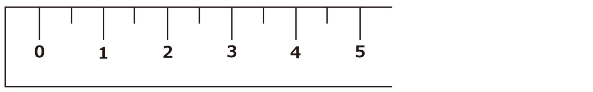

| アメリカの小学校教科書ドリルでおもしろいほど英語が身につく! Part 2 (impress QuickBooks) | |
| 松浦 庸夫 | |
| (2016) | |
はじめに
英語を勉強していて、ふと単純な疑問が浮かんでくることはないでしょうか。たとえば、ニワトリはchicken、卵はeggだけど、孵化した「ヒヨコ」は英語で何て言うのだろうか。そもそも「孵化する」を英語で何と言うのだろうか......、という具合に。
本書は、アメリカの小学生レベルの基礎学習をテーマにした『アメリカの小学校教科書ドリルでおもしろいほど英語が身につく！』の第２弾です。もちろん、いくら小学生レベルといっても、当然ながら本場の小学生たちは母国語が英語なのですから、私たちがいきなりすべて英語の教科書に取り組んだところで、かなり手強いでしょう。
そこで、本書では実際に使われている教科書や参考書、学習指導書、さらには生徒たちに配られたテストやプリント類などの資料をベースにしてオリジナルの問題集に仕上げました。教科は英語(国語)、算数、理科、社会の４科目。穴埋めや選択肢問題などさまざまな出題形式で、出題方法も簡単な英語だったり、日本語だったり。今回はイラストや図をたくさん載せています。
さらに、理解を深め、豆知識も増やせるように解説欄も設けました。クイズに挑戦するような気持ちでページをめくっていくうちに、冒頭の素朴な疑問がいつの間にか英語で言えるようになっているかもしれません。ちなみに、冒頭の「孵化する」は２年生の理科に収載しています。
2016年3月
松浦 庸夫
小学１年生
1st Grade
英語
小学１年生
Question 1
次の覚え歌を読んで、質問に答えてください。
Thirty Days Hath September
Thirty days hath September,
April, June, and November.
All the rest have thirty-one,
But February has twenty-eight alone,
Except in leap year, that's the time
When February's days are twenty-nine.
さて、ひと月が30日の月は1年でいくつありますか？
Answer
4つ
January 1月
February 2月
March 3月
April 4月
May 5月
June 6月
July 7月
August 8月
September 9月
October 10月
November 11月
December 12月
それぞれの月の日数を覚えるのに便利な「覚え歌」(mnemonic rhymes／ニーモニック・ライムズ)で、古くは15世紀の文献にも登場するものです。hathとは、haveの古典的な使い方で、"Thirty Days Hath September"は、歌詞の冒頭をそのままタイトルにしていて、「9月は30日」という意味です。ちなみに、日本では「西向く士／にしむくさむらい」(二月、四月、六月、九月、十一月は1ヵ月が31日ではないという意味)という言葉がこれに相当します。
Question 2
Question 1の歌に出てくる「leap year」とは何ですか？
Answer
うるう年
4年に一度のうるう年(leap year)に限り、2月は28日ではなくて29日になります。それ以外の「平年」はcommon yearと呼びます。
Question 3
次の顔の表情を見て、当てはまる気持ちを下の語群から選んでください。
(a) sad
(b) happy
(c) boring
(d) angry
Answer
[1] 悲しい表情 = (a) sad
[2] 怒った表情 = (d) angry
[3] 笑っている表情 = (b) happy
boringは「つまらない」という意味なので、ここでは当てはまりません。
Question 4
次のスプーナリズム(言い間違い)を正しく書き直してください。和訳の下線部分がヒントです。
(例)
I shake a tower.
(私はタワーを揺らします)
↓
I take a shower.
(私はシャワーを浴びます)
※shakeの"sh"と、towerの"t"を入れ替えれば、 意味が通ります。
(1)
This is a well-boiled icicle.
(これは十分に加熱した氷柱です)
↓
This is a well-[ ed] [ ].
(これは十分に油を差した自転車です)
(2)
Can I sew you to another sheet?
(あなたを他のシーツに縫い付けましょうか？)
↓
Can I [ ] you to another [ ]?
(あなたを他の座席にご案内しましょうか？)
(3)
Is the bean dizzy?
(豆はめまいがするのですか？)
↓
Is the [ ] [ ]?
(学部長はお忙しいのですか？)
Answer
(1) This is a well-oiled bicycle.
(2) Can I show you to another seat?
(3) Is the dean busy?
spoonerism[スプーナリズム]とは、日本語にすると「頭音転換」などと言われるものです。1つの単語で2つ以上の音節が連続した場合に、前後を入れ替えてしまう言い間違いのことを指します。たとえば、「マリリン・モンロー」を「モリリン・マンロー」としたり、例題のようにtake a shower(シャワーを浴びる)をshake a tower(タワーを揺らす)としてしまったりすることです。イギリスに実在したウィリアム・スプーナーという牧師がこうした言い間違いをしていたことに由来します。
Question 5
次の文に当てはまる動詞を下の語群から選んで書き入れてください。
(1) When people fell happy, we usually [ ].
(2) When people fell sad, we usually [ ].
(3) When people fell hungry, we usually [ ].
(4) When people fell tired, we usually [ ].
(5) When people fell thirsty, we usually [ ].
(a) drink (b) eat (c) sleep
(d) cry (e) smile
Answer
(1) (e) smile
(2) (d) cry
(3) (b) eat
(4) (c) sleep
(5) (a) drink
各文の日本語訳は次の通りです。
(1) 人は幸せを感じると、たいてい笑います。
(2) 人は悲しみを感じると、たいてい泣きます。
(3) 人は空腹を感じると、たいてい食べます。
(4) 人は疲れを感じると、たいてい寝ます
(5) 人は喉の乾きを感じると、たいてい飲みます。
算数
小学１年生
Question 1
次の表の空欄にアルファベットで文字を記入してください。
Answer
(1) first (2) second
(3) three (4) fourth
(5) fifth (6) sixth
(7) seventh (8) eighth
(9) ninth (10) tenth
「～番目」や「第～回」などと言うときの序数(ordinal number)は、たいていの場合、数字の後に"th"をつけるのが基本です。ただし、1はfirst、2はsecond、3はthirdになり、また、数字によってはスペルが変化するので注意しましょう。ちなみに、0は基数ならzero、序数ならzerothとつづります。
Question 2
次の計算式の「？」に入る数字を英語で答えてください。
(1) seven + ？ = nine
(2) two + ？ = two
(3) eighteen + ？ = twenty-three
Answer
(1) two
(2) zero
(3) five
足し算と引き算の応用問題の1つで、数式の一部の数字が隠れていて、答えがわかっているというものです。英語では、missing number(行方不明の数)とかmystery number(謎の数字)といった子どもたちの好奇心をそそるような言い方をします。
Question 3
次の立体図形の名前を、下から選んでください。
(a) cone
(b) cube
(c) cylinder
(d) sphere
Answer
[1](d) sphere[スフィア] (球)
[2](c) cylinder[スィリンダー] (円柱)
[3](b) cube[キューブ] (立方体)
[4](a) cone (円錐)
平面図形はflat shape、立体図形はsolid shapeと呼びます。また、sphereには「天体、惑星」という意味もあります。
Question 4
時計にある3つの「針」は、それぞれ英語で何と言いますか？
Answer
hour hand (短針)
minute hand (長針)
second hand (秒針)
Question 5
What time does the clock say?
Answer
(1) It's 7 o'clock.
(2) It's five thirty. / It's half past five.
「～時」を表すo'clockは、of the clockの短縮形です。「午前」や「午後」はそれぞれ～ o'clock in the morning、～ o'clock in the afternoonという形を用い、日没以降はin the eveningやat nightを使うのが一般的です。ちなみに、略式記号で午前をAM/a.m.、午後をPM/p.m.としますが、これはラテン語のante meridiem(午前)、post meridiem(午後)に由来します。日本では数字の前にa.m.やp.m.を置くことがありますが、正式には数字のあとにくるので注意しましょう。また「12時」を言うときには、昼と夜の区別をするため、twelve noon(正午12時)、またはtwelve midnight(午前0時)と言います。
Question 6
次の対になっているコインの合計金額に、不等号を書き入れてください。
(1)
2 pennies & 3 dimes [ ] 2 nickels & 1 quarter
(2)
3 nickels & 2 quarters [ ] 25pennies & 3 dimes
Answer
(1)
2 pennies & 3 dimes (=32) ＜ 2 nickels & 1quarter (=35)
(2)
3 nickels & 2 quarters(=65) ＞ 25 pennies & 3 dimes (=55)
2つの数や式の大小関係を示す不等号は、「＞」(大なり)ならgreater than、「＜」(小なり)ならless thanと言います。
理科
小学１年生
Question 1
次の動物を、それぞれ雑食動物(omnivores)、草食動物(herbivores)、肉食動物(carnivores)に分類しましょう。
Answer
omnivores(雑食動物) = bears, humans
herbivores(草食動物) = horses, cows

carnivores(肉食動物) = tigers, sharks
humans(人間)の場合、宗教や主義、健康上の理由などから「菜食主義」(vegitarianism)の人も存在します。
Question 2
次のそれぞれの温度として適当なものを下の語群から選んでください。
(1) 0℃
(2) 15℃
(3) 36℃
(4) 100℃
(5) 5,526℃
(a) the surface of the Sun
(b) boiling point
(c) freezing point
(d) normal human body temperature
(e) average surface temperature on Earth
Answer
(1) 0℃
(c) freezing point (氷点)
(2) 15℃
(e) average surface temperature on Earth (地球の平均表面温度)
(3) 36℃
(d) normal human body temperature (人間の平熱)
(4) 100℃
(b) boiling point (沸点)
(5) 5,526℃
(a) the surface of the Sun (太陽の表面温度)
日本では一般に「摂氏」を使いますが、これはスウェーデンの天文学者セルシウスに由来するため、Celsius(℃)と表記されます。アメリカで主流の「華氏」は、ドイツの物理学者ファーレンハイトの考案で、Fahrenheit(ºF)と記されます。華氏の場合、氷点は32ºF、沸点は212ºFです。
Question 3
次の太陽系の惑星を、太陽から近い順に並べましょう。
Answer
日本語でも「水、金、地、火、木、土、天、海、冥」と覚えられていますが、2006年の国際天文学連合で、冥王星は太陽系から除外され、矮惑星に分類されました。これを機に、アメリカではplutoに「降格させる、過小評価する」という意味をもたせるようになりました。
Question 4
これはアラスカ州の旗で、右上に描かれているのは北極星です。残りの7つの星が表しているのは「北斗七星」と呼ばれる星座です。これは英語で何と言いますか？
Answer
the Big Dipper / the Plough
北の空に輝く大熊座の七つ星で、「ひしゃく」の形に並んでいることから、アメリカではthe Big Dipper、イギリスでは農具の「すき」を連想させることから、the Ploughとも呼ばれています。ちなみに、北極星は英語でNorth StartやPolarisなどと言います。
Question 5
次の文章の空欄に当てはまる単語や数字を、下の語群から選んでください。
When you look up at the sky on a clear night, what can you see? Yes, you can see countless [ 1 ]. Long ago, people found pictures among those stars as if they connect the dots. They are called the [ 2 ], and there are [ 3 ] of them in the universe.
(a) stars
(b) aliens
(c) planets
(d) constellations
(e) shooting stars
(f) UFOs
(g) 88
(h) 888
Answer
(1) (a) stars
(2) (b) constellations
(3) (g) 88
問題文の日本語訳は次の通りです。
空気の澄んだ夜、空を見上げたら、何が見えますか？ そうです、数えきれないほどの[ 星 ]が見えます。遠い昔、人々はまるで点と点を結ぶかのようにして、たくさんの星の中に絵を見出しました。それらは[ 星座 ]と呼ばれていて、宇宙には[ 88 ]もあるのです。
このほかの単語の意味はそれぞれ、aliens(宇宙人、外国人)、planets(惑星)、shooting stars(流れ星)、UFOs(未確認飛行物体、UFO)です。
社会
小学１年生
Question 1
次の2つの文に当てはまる科目を、下から選んでください。
(1) 重大な出来事の年代順の記録
(2) 地球の表面についての研究
(a) geography
(b) history
Answer
(1) 重大な出来事の年代順の記録 =
(b) history
(2) 地球の表面についての研究 =
(a) geography
英語で「歴史」はhistoryとつづります。この単語にはhistory、つまり「人間の物語」という意味が込められていると言われます。有名無名を問わず、これまで地球上に存在したあらゆる人たちの物語を学ぶ学問ということで、History is everyone's story.などと言うこともしばしばです。また「地理」を意味するgeographyと類似したgeologyは「地質(学)」という意味です。
Question 2
アメリカ合衆国の正式名称を英語で何と言いますか？
Answer
United States of America
(略称)
USA / U.S.A
US / U.S.
the statesと略すこともあります。また、英語のUnited Statesを直訳すると「合衆国」よりも「合州国」のほうが適当とも言えます。国名のもとになったアメリカ大陸は、イタリアの探検家、アメリゴ・ヴェスプッチ(Amerigo Vespucci/1454-1512)のラテン名に由来します。
Question 3
アメリカ合衆国の首都はどこですか？ 英語で答えてください。
Answer
Washington D.C.
東海岸に位置し、どの州にも属しません。西海岸にあるワシントン州(Washington State)とは異なります。また、D.C.は「コロンビア特別区」を表すthe District of Columbiaの略で、南米のコロンビア共和国(Republic of Colombia)とはつづりが違います。
Question 4
アメリカ合衆国の北と南に隣接する国を英語で答えてください。
Answer
[北] Canada(カナダ)
[南] Mexico(メキシコ)
カナダはそのまま正式名称で、首都はオタワ(Ottawa)です。メキシコは、英語ではUnited Mexican States(メキシコ合衆国)が正式名称で、首都はメキシコシティ(Mexico City)です。
Question 5
次のうち、キリスト教に直接関係のある日はいくつありますか？
(a) New Year's Day
(b) St. Valentine's Day
(c) Easter Day
(d) Independence Day
(e) Labor Day
(f) Columbus Day
(g) Halloween
(h) Veterans Day
(i) Thanksgiving Day
(j) Christmas Day
Answer
4つ
St. Valentine's Day
Easter Day
Halloween
Christmas Day
(a) 元日(1月1日)
(b) 聖バレンタインの祝日(2月14日)：3世紀にローマで殉職した聖バレンティヌスの記念日。
(c) 復活祭の日(春分後の最初の満月の次の日曜日)：キリストの復活を祝う。通常の会話では、DayはつけずにEasterという。
(d) 独立記念日(7月4日)：アメリカ合衆国の独立宣言を記念した祝日。
(e) 労働者の日(9月の第1月曜日)：カナダとアメリカで適用され、日本や欧州では5月1日のMay Dayがこれに相当する。
(f) コロンブス・デイ(10月の第2月曜日)：クリストファー・コロンブスが北米大陸に到着したことを祝う。
(g) ハロウィーン(10月31日)：すべての聖人と殉職者を記念する諸聖人の祝日(万聖節/All Hallows' Day)の前夜祭。
(h) 復員/退役軍人の日(11月11日)：2度の世界大戦終結の記念日。
(i) 感謝祭(11月の第4木曜日)：アメリカの開拓者が初の収穫を神に感謝したことに由来する。別名はTurkey Day(七面鳥の日)。
(j) クリスマス(12月25日)：キリストの降誕を祝う日。
Question 6
次の文句は、アメリカの貨幣に必ず印刷または刻印されています。空欄に当てはまる単語を下の語群から選んでください。
In God We [ ]
(a) Believe
(b) Live
(c) Fight
(d) Trust
(e) Sacrifice
Answer
(d) Trust
「我々は神を信ずる」という意味の、アメリカ合衆国及びフロリダ州の標語です。believe、trustともに「信じる、信頼する」という意味においては共通しますが、前者は「相手の誠実さや能力」が基になっているのに対し、後者は「人や物に対する心からの絶対的なもの」が根底にあります。そのほかの単語の意味はそれぞれ、Live(生きる)、Fight(戦う)、Sacrifice(ささげる)です。
Question 7
次の単語と意味を、下から選んでください。
(1) ruin
(2) palace
(3) fort
(a) 要塞、砦
(b) 宮殿
(c) 遺跡
Answer
(1) ruin = (c) 遺跡
(2) palace = (b) 宮殿
(3) fort = (a) 要塞、砦
これらの単語を使って場所の名前を表すことができます。たとえば、沖縄県の首里城跡は、Ruins of Shuri Castleと言い、フランスのヴェルサイユ宮殿は、Palace of Versailesと呼びます。なおruinには「破壊、滅亡」という意味が、palaceには「官邸、公邸」という意味もあります。fortには「交易市場」という意味もあります。米国サウスカロライナ州にあるサムター要塞(Fort Sumter)は、南北戦争勃発の地として知られています。
Question 8
下のイラストは世界の有名な建造物です。各建造物の名前とどこの国にあるかをそれぞれ英語で答えてください。
Answer
[1] the Great Sphinx of Giza / Egypt
[2] the Great Wall of China / China
[3] the Leaning Tower of Pisa / Italy
[1] ギザの大スフィンクス：ライオンの体と人間の顔をもつ守り神「スフィンクス」の像の中でも最大のものです。
[2] 万里の長城：歴代の王朝が防衛のために造った城壁で、総延長は6,352キロあります。
[3] ピサの斜塔：ピサ大聖堂の鐘楼で、高さは地上55メートルあり、約5.5度傾いています。leaningは「傾斜、傾き」のほかに、「好み、偏愛、性癖」という意味があります。
小学２年生
2nd Grade
英語
小学２年生
Question 1
次のイラストを見て、下の語群から適当な形容詞を選んでください。また、その形容詞と反対の意味をもつ形容詞もその中から選んでください。
fast / loud / strong
slow / weak / quiet
Answer
[1] loud(騒々しい)
反意語：quiet(静かな)
[2] fast(速い)
反意語：slow(遅い)
[3] strong(強い)
反意語：weak(弱い)
人物の描写や物事の説明に欠かせないのが形容詞です。英語では、adjective[アジェクティヴ]と呼びます。また、反意語をantonym[アントニム]と言います。
Question 2
次の物語のあらすじを読んで、それぞれの主人公の職業を下の語群から選んで答えてください。
(1) Paul Bunyan(ポール・バニヤン)
とてつもない大男で、自ら作った斧をひと振りすれば100本の木が切り倒せたという。相棒となった青い雄牛の赤ん坊「ベイブ」とともに、丸太を流す運河を掘ったそうだ。それがミシシッピ川の誕生であり、掘り起こされた土でできたのが、ロッキー山脈とアパラチア山脈だという。
(2) Pecos Bill(ペコス・ビル)
幼少期に家族と引っ越しの途中、誤ってワゴンから転落し、森でコヨーテに育てられた身長2メートル以上の男。コヨーテたちから狩りを教わり、人間界に戻ってからは凄腕のハンターとして知られた。大干ばつに見舞われたテキサス州で、大竜巻を乗りこなして雨を降らせたという。
(a) cowboy
(b) lumber jack
Answer
(1) Paul Bunyan
(b) lumber jack(木こり)
(2) Pecos Bill
(a) cowboy(カウボーイ)
larger-than-life heroesと呼ばれる人物たちの物語です。larger-than-lifeとは「実際より大きい」という意味で、「並外れた、超人的な」という場合や、「実物より大きな」というオーバーな事柄に対しても使う言葉です。こうした英雄的な物語を「民話、伝説」を意味するfolk taleや、「大げさな話、ホラ話」を指すtall taleと呼んだりします。
Question 3
象の絵を見て、それぞれの部位に当てはまる言葉を語群から選んでください。
(a) ears
(b) tail
(c) tusks
(d) trunk
Answer
[1] (d) trunk
[2] (c) tusks
[3] (b) tail
[4] (a) ears
一般に車の「トランク」を指すtrunkは、「象の鼻」のほかに「木の幹」という意味でも使われます。tusk(s)は、特に象やセイウチなどの「牙」を言い、犬やオオカミなど肉食動物の「牙」は、fang(s)を使います。ivoryも「象牙、(象などの)牙」という意味です。
Question 4
次のことわざの意味を、下の語群から選んでください。
(1) Easier said than done.
(2) Get up on the wrong side of the bed.
(3) Two heads are better than one.
(a) 機嫌が悪い
(b) 三人寄れば文殊の知恵
(c) 言うは、行うより易し
Answer
(1)(c) 言うは、行うより易し
(2)(a) 機嫌が悪い
(3)(b) 三人寄れば文殊の知恵
「ことわざ」を英語ではproverb[プロヴァーブ]と言います。(1)は「～より...のほうが簡単だ」という意味の、(it's) easier ... than ～が使われています。(2)は「ベッドの反対側がら起きる」ということで、その人の虫の居所の悪さを表現しています。(3)は「1人の頭よりも2人の頭のほうが良い」という直訳から推測できるでしょう。
Question 5
Q4の問題に登場した3つのことわざを応用して、ダイアローグの空欄を埋めてください。
(1)
A: I can't solve these math problems.
B: Let me help. Don't you think [ ]?
(2)
A: If you can remember just one word every-day, you will earn 365 words in one year!
B: I know. [ ].
(3)
A: The boss seems strange this morning.
B: I guess he just [ ].
Answer
(1) two heads are better than one
(2) Easier said than done
(3) got up on the wrong side of the bed
各文の日本語訳は次の通りです。
(1)
A: 算数の問題が解けないよ。
B: 手伝ってあげるよ。三人寄れば文殊の知恵って言うだろ？
(2)
A: 毎日1単語覚えれば、1年で365単語になるわよ！
B: わかってるさ。言うは行うより易し、だよね。
(3)
A: ボスの様子、今朝は変だな。
B: きっと、機嫌が悪いだけでしょう。
算数
小学２年生
Question 1
下の定規(ruler)に次の長さを点で印してください。

(1) at one inch
(2) at three point five inches
Answer
英語圏では「ヤード・ポンド法」が一般的です。イギリスでは「帝国単位」(Imperial Units)、アメリカでは「米習慣単位」(U.S. Custom /Customary Units)と呼ばれています。日本は「メートル法」(metric system)で、それぞれmm(millimeter)、cm(centimeter)、m(meter)と表します。1 inch = 2.54 centimetersで、12 inches = 1 foot = 30.48 centimetersと覚えておくと便利です。inchよりも細かい単位はないので、0.5 inchならhalf inchあるいはzero point five inchのように言います。
Question 2
カレンダーにマークされた日付を英語で答えてください。
Answer
1日：April 1st(first)
6日：April 6th(sixth)
10日：April 10th(tenth)
11日：April 11th(eleventh)
12日：April 12th(twelfth)
15日：April 15th(fifteenth)
20日：April 20th(twentieth)
22日：April 22nd(twenty-second)
28日：April 28th(twenty-eighth)
30日：April 30th(thirtieth)
日付を言うときには「4月5日」なら、Today is April five.とは言わず、Today is April fifth.もしくはToday is the fifth of April.のように言います。曜日は、Sunday(日曜日)、Monday(月曜日)、Tuesday(火曜日)、Wednesday(水曜日)、Thursday(木曜日)、Friday(金曜日)、Saturday(土曜日)と言います。
Question 3
次の英文を読んで、棒グラフを完成させなさい。
Mrs. McCormick asked her class what their favorite subject was. Ken says his favorite subject is English. There are three more students who agree with him. Mayumi and her best friend, Yuki, love math the most. David prefers science rather than any other subject. Linda and Tom felt the same as David Jack likes to study science, but loves social studies more than any other subject.
Answer
棒グラフのことを、英語でbar graphと言います。文章では、まず「ケンは英語が一番好きな科目」と言っていて、「さらに3人の生徒が彼に同意」(three more students agree with him)とあるので、1＋3＝4人という答えが出せます。次は「マユミと親友のユキは算数が大好き」と述べているので、棒グラフのmathは2マスが埋まります。そして「デイヴィッドは他のどの科目よりも理科が好き」という文に続いて、「リンダとトムも彼と同じように感じている」とあるので、理科のマス目は3つになります。最後は「ジャックは理科の勉強も好きだけれど、社会科がほかのどの教科よりも好き」としているので、社会の欄が1マス埋まり、棒グラフの完成です。
Question 4
Q3の棒グラフの合計人数を計算して、下の文を完成させてください。
There are [ ] students in [ ]'s class.
Answer
There are [ 10 ] students in [ Mrs. McCormick ]'s class.
Q3の文章の冒頭で「マコーミック先生は、自分のクラスの生徒たちに各自の一番好きな科目を尋ねました」とあります。さらに、棒グラフを見ると、4＋2＋3＋1＝10という算式が導き出せます。
Question 5
次のかけ算の式の空欄に当てはまる数字を英語で書いてください。
例)
nine × [ ] ＝ forty-five
↓
nine × [ five ] ＝ forty-five
(1)
two × [ ] ＝ zero
(2)
seven × [ ] ＝ seven
(3)
ten × [ ] ＝ four × [ ]
Answer
(1)
two × [zero] ＝ zero
(2×0＝0)
(2)
seven × [one] ＝ seven
(7×1＝7)
(3)
ten × [ four ] ＝ four × [ ten ]
(10×4＝4×10)
かけ算のことは英語でmultiplication[マルティプリケイション]と言います。たとえば、8×3＝24という式の読み方は、Eight times three is / equals twenty-four.と言ったり、Eight multiplied by three is / equals twenty-four.と言ったりします。また、かける数(因数)をfactor、答え(積)をproductとそれぞれ呼びます。
理科
小学２年生
Question 1
次の図はニワトリの生涯過程(life cycle)を表しています。それぞれの段階を表した言葉を下の語群から選んでください。
(a) chicken
(b) hatch
(c) chick
(d) egg
Answer
[1] (a) chicken(ニワトリ)
[2] (d) egg(タマゴ)
[3] (b) hatch(ふ化)
[4] (c) chick(ヒヨコ)
オンドリはrooster、メンドリはhenと呼びます。また、chickenには、俗語として「臆病者、青二才」という意味もあります。「タマゴからヒナをかえす」は、hatch a chick from an eggと言います。ちなみに、「ニワトリが先か、タマゴが先か？(どちらが原因でどちらが結果か)」という答えの出ない議論は、Which came first, the chicken or the egg?と言います。
Question 2
次の動詞はそれぞれ「食べ物」(foods)もしくは「飲み物」(drinks)のどちらに対して使われますか？ 食べ物なら「F」、飲み物なら「D」をつけましょう。
(1) bite [ ]
(2) sip [ ]
(3) chew [ ]
(4) chug [ ]
Answer
(1)F (2)D (3)F (4)D
通常「食べる」ことはeat、「飲む」ことはdrinkで表されます。(1)のbite[バイトゥ]は「ひとかじり」という意味で、Can I have a bite?(ひと口もらっていい？)のように使います。(2)のsipも同様に「すする」という意味でLet me take a sip.(ひと口飲ませて)のように言います。(3)のchew[チュウ]は「かむ、かみ砕く」という意味で、日本人にはchewing gum(チユーイング・ガム)の形で知られています。(4)のchug[チャグ]は「一気に飲む」を表します。また、物などを「つかみ取る」という意味のgrabは、食べ物と飲み物のどちらに対しても「素早く食べる、飲む」という意味で用いられます。
Question 3
下の図は「食事バランスガイド」(Food Pyramid)と呼ばれるものです。それぞれのグループの絵にあてはまる英語を下の語群から選んでください。
(a) Vegetable Group
(b) Fruit Group
(c) Milk & Yogurt Group
(d) Grain Group
(e) Meat & Fish Group
(f) Oil & Sweet Group
Answer
アメリカでは、USDA(United States Department of Agriculture/米国農務省)が定めた「栄養バランスガイド」をfood guide pyramidと呼んでいます。栄養は英語でnutrition[ニュートリション]と言います。また、dietは一般に「食べ物、食事、食習慣」などを指し、a special diet for the baby(赤ん坊のための特別な食事)のように使われます。日本語で「ダイエッ卜をする」に当たる英語表現にはon a dietが用いられ、I'm on a diet.のように言います。
Question 4
空欄に当てはまる英単語を下の語群から選んで、文を完成してください。
磁石は英語で[ 1 ]と言いますが、「S極」は英語では[ 2 ]、「N極」は英語では[ 3 ]とそれぞれ呼んでいます。同じ極同士を向き合わせて「反発する」ことを[ 4 ]、違う極同士を向き合わせて「引き合う」ことを[ 5 ]と言います。
(a) magnet
(b) repel
(c) attract
(d) South Pole
(e) North Pole
Answer
(1)(a) magnet
(2)(d) South Pole
(3)(e) North Pole
(4)(b) repel[リペル]
(5)(c) attract[アトラクト]
repelには「追い払う、拒絶する」という意味もあります。attractには「引き付ける、魅了する」という意味もあります。また、磁極はmagnetic pole[マグネティック・ポウル]と言います。
Question 5
次のそれぞれの工具の役割を、下から選んでください。
(1) screwdriver
(2) hammer
(3) pliers
(4) wrench
(a) to pound nails
(b) to tighten or loosen screws
(c) to turn bolts and nuts
(d) to grip, turn, pull, or crimp things
Answer
(1) screwdriver[スクリュードライバー]
(b) to tighten or loosen screws
(2) hammer
(a) to pound nails
(3) pliers
(d) to grip, turn, pull, or crimp things
(4) wrench[レンチ]
(c) to turn bolts and nuts
日本語で「ドライバー、ネジ回し」と呼ばれるscrewdriverは、ネジを締めたり(tighten)、緩めたり(loosen)するのに使われます。「ハンマー」は、正しくは「ハマー」の発音が近く、クギを打ちつける(pound)のに用いられます。日本では「プライヤー」は「ペンチ」の一種と考えられていますが、英語ではどちらもpliers[プライヤーズ]と呼びます。2枚の刃で1組なので「ハサミ」がscissorsと呼ばれるのと同じく、通常はpliersと複数形で使われます。役割は、物を掴んだり(grip)、回したり(turn)、引っぱったり(pull)、丸めたり(crimp)することです。イギリス英語ではspanner[スパナー]とも呼ばれるレンチは、ボルトやナットを回すのに使用されます。
社会
小学２年生
Question 1
リバティ島に隣接するエリス島(Elis Island)はどんな場所でしたか？ 次の中から選んでください。
(a) the federal prison
(b) the federal immigration station
(c) the federal court
Answer
(b) the federal immigration station(連邦移民管理局)
1892年から1954年までエリス島にありました(現在は「移民博物館」)。「移民、移住者」を英語ではimmigrant[イミグラント]と呼びますが、これは他国から入ってくる人に対して使われます。自国から他国への「移民、出稼ぎ者」のことはemigrant[エミグラント]と言います。(a)は「連邦刑務所」、(c)は「連邦裁判所」をそれぞれ表します。
Question 2
1872年の米大統領選でスーザン・Ｂ・アンソニーは何をして逮捕されましたか？ 次の中から選んでください。
(a) She voted for the presidential election.
(b) She forgot to vote for the presidential election.
(c) She voted for the presidential election twice.
Answer
(a) She voted for the presidential election.
日本ではあまり知られていませんが、Susan B. Anthony(1820-1906)は女性が男性と同等の権利を勝ち取るためにあらゆる運動を起こした人物としてアメリカの小学校で習います。(a)は「彼女は大統領選に投票した」という意味ですが、現代では当たり前の行動が、まだ女性たちに選挙権が認められていなかった時代には「違法」だったのです。彼女の死後14年が経った1920年、アメリカのすべての女性(18歳以上)に投票権が認められました。(b)は「投票を忘れた」、(c)は「二度、投票した(二重投票)」をそれぞれ意味します。
Question 3
アメリカ合衆国50州のうち、ほかの州と隣接していない州を英語で答えてください。
Answer
Alaska and Hawaii
アラスカはアメリカの最北端に位置し、ワシントン州とはカナダを挟んで隣接していません。ハワイは太平洋(Pacific Ocean)に位置し、1959年に50番目の州になりました。現地では「ハワイイ」と発音するため、スペルも"i"が2つになっています。
Question 4
全米50州のうちで名前の長い州を集めました(ただし、NorthやSouth、Newなどがつく州名は除いています)。英語のつづりにすると最も長い州名はどれですか？ 英語で答えてください。
ペンシルヴァニア
マサチューセッツ
テネシー
コネチカット
ミシシッピー
カリフォルニア
Answer
Massachusetts
全部で13文字です。1788年に6番目の州として誕生しました。アメリカ最古の歴史をもつニューイングランド6州の1つで、1620年に入植者が移住を始めた土地です。州都はボストン(Boston)です。ほかの州のつづりと文字数は、Pennsylvania(12文字)、Tennessee(9文字)、Connecticut(11文字)、Mississippi(11文字)、California(10文字)です。
Question 5
次の各州の州都を、下から選んでください。
(1) New York
(2) California
(3) Illinois
(4) Florida
(5) Hawaii
(a) Tallahassee
(b) Honolulu
(c) Springfield
(d) Albany
(e) Sacramento
Answer
(1) New York
(d) Albany[オールバニー]
(2) California
(e) Sacramento[サクラメント]
(3) Illinois
(c) Springfield
(4) Florida
(a) Tallahassee[タラハシー]
(5) Hawaii
(b) Honolulu
ニューヨークは、ニューヨーク市と思われがちですが、ニューヨーク市が州都だったのは1790年までのことです(1776年の合衆国独立時は首都でもありました)。オールバニー市が州都になったのは1797年です。サクラメントは、ゴールドラッシュによる人口急増で1854年に州都になりました。このように、必ずしもよく知られた大都市が州都ではありません。
Question 6
アメリカ合衆国で、アラスカ州に次いで2番目に面積が広いのは何州ですか？ 英語で答えてください。
Answer
Texas
695,622平方キロメートルあります。1845年に28番目の州として誕生しました。南部に位置し、南側をメキシコ国境と接しています。州都はオースティン(Austin)です。
Question 7
次の英文は日本の食べ物を説明しています。それぞれ日本語で答えてください。
(1) a cheese-like food made from curdled soybean milk
(2) vegetables and seafood dipped in batter and deep-fried
(3) a dish of thinly sliced meat and vegetables boiled quickly in broth
Answer
(1) 豆腐
(2) 天ぷら
(3) しゃぶしゃぶ
(1)は「凝固した豆乳から作ったチーズのような食べ物」という意味です。bean curdとも呼びます(curdは凝乳状の食品)が、tofuとして英語に定着しています。(2)のdipped in batter and deep-friedは「衣をつけて揚げる」という意味で、(3)のthinly sliced meat and vegetables boiled quickly in brothは「スープで素早く煮た、薄切りの肉や野菜」という意味です。
小学３年生
3rd Grade
英語
小学３年生
Question 1
次の文をそれぞれの指示に従って書き換えてください。
(1) Steven played basketball with his classmates.
→疑問文に書き換えましょう
(2) Does Susan like animals?
→平叙文に書き換えましょう
(3) I want you to wash the dishes now.
→命令文に書き換えましょう
Answer
(1) Did Steven play basketball with his classmates?
(2) Susan likes animals.
(3) Wash the dishes now!
(1)の文は平叙文(declarative sentence)なので、それを疑問文(interrogative sentence)にするには、三人称単数のdoesを先頭に置きますが、ここでは元の文がplayedで過去形なので、didに直します。疑問符も忘れないようにしましょう。(2)は疑問文なので、文頭のDoesを取って、likeに三単現の"s"をつけます。疑問符を終止符に変えることにも注意しましょう。(3)は平叙文を命令文(imperative sentence)にしますが、単純にI want you to(私はあなたに～してほしい)の部分を取り、washの"w"を大文字にします。命令的になるように、終止符を感嘆符に換えるとよいでしょう。
Question 2
空欄に「a」、「an」、「the」のいずれかの冠詞を入れて、文を完成してください。
On my way home from school today, I saw [ 1 ] man running down [ 2 ] street. Soon after, there came [ 3 ] police officer riding [ 4 ] bicycle. I thought [ 5 ] police officer was chasing [ 6 ] man. He must have committed [ 7 ] awful crime.
Answer
On my way home from school today, I saw [ a ] man running down [ the ] street. Soon after, there came [ a ] police officer riding [ a ] bicycle. I thought [ the ] police officer was chasing [ the ] man. He must have committed [ an ] awful crime.
英文の日本語訳は「今日、学校からの帰り道、私は1人の男の人が通りを走ってくるのを見たの。そのすぐあとに、1人の警察官が自転車で走ってきたの。さっきの男の人を警察官は追っていたんだと思ったわ。その人は何か恐ろしい犯罪を犯したに違いないわ」となります。冠詞は、直後にくる名詞が母音で始まればanに、子音で始まればaになります。theは、すでに話に一度登場していたり、何か特定の名詞を指す場合に使われます。したがって、上記の文章では、最初はmanもpolice officerもaですが、同じ話の中で二度目に出てくるときには「その男」「その警官」となるので、theがつきます。冠詞はarticle[アーティクル]と言います。
Question 3
次の品詞の意味を、下から選んでください。
(1) 名詞
(2) 形容詞
(3) 動詞
(4) 副詞
(5) 代名詞
(a) to describe a noun or pronoun
(b) to describe a verb
(c) to substitute for a noun
(d) to name a person, place, or thing
(e) to express action
Answer
(1) 名詞
(d) to name a person, place, or thing
(2) 形容詞
(a) to describe a noun or pronoun
(3) 動詞
(e) to express action
(4) 副詞
(b) to describe a verb
(5) 代名詞
(c) to substitute for a noun
それぞれの意味と発音は次の通りです。名詞(noun/ナウン)は、人や場所、物の名称を表す言葉です。形容詞(adjective/アジェクティヴ)は、名詞や代名詞を説明します。動詞(verb/ヴァーブ)は、行動を表現します。副詞(adverb/アドヴァーブ)は、文字通り、verbにadd(加える)という意味で、つまり動詞を描写します。代名詞(pronoun/プロゥナウン)は、名詞の代わりに用いられます。
Question 4
次の2つの英文はそれぞれ"fiction"もしくは"nonfiction"のどちらについて書かれていますか？
(a) Stories that did not actually happen.
(b) Stories that really happened.
Answer
(a) fiction
(b) nonfiction
(a)は「実際には起きていない物語」なので、fiction[フィクション]が正解です。(b)は「本当に起きた物語」なので、nonfiction[ノンフィクション]が正解です。日本語でもよく知られている「事実は小説よりも奇なり」は、イギリスの詩人バイロン(George Gordon Byron/1788-1824)の言葉で、英語ではTruth / Fact is stranger than fiction.と言います。
Question 5
次のことわざを日本語に書き換えてください。
(1) All roads lead to Rome.
(2) Rome was not built in a day.
(3) When in Rome, do as the Romans do.
Answer
(1) すべての道はローマに通ず。
(2) ローマは一日にして成らず。
(3) 郷に入つては郷に従え。
(1)と(2)は英語がそのまま翻訳されていて、それぞれ「方法は異なっても目的は同じ／同じ目的を遂げるにも方法はいろいろ」、「大成には忍耐が必要／千里の道も一歩から」という意味です。(3)を直訳すると「ローマに行ったら、ローマ人のするように行動せよ」となります。
Question 6
次の単語を並べ替えてことわざを完成させてください。文頭の単語は1文字目が大文字に、最後の単語はピリオドがついています。
(1) pains / in vain. / Great / all / but
(2) hold / Who / tongues? / can / men's
(3) marches / stomach. / An / on / its / army
Answer
(1) Great pains but an in vain.
(2) Who can hold men's tongues?
(3) An army marches on its stomach.
単語を並べ替える(rearrange)問題で、通常はヒントとなるような大文字やピリオドはありません。(1)は「苦心した」(great pains)けれど、すべてが「無駄になった」(in vain)という意味から、「骨折り損のくたびれもうけ」のことです。(2)は「人の舌」(men's tongues)を誰が「押さえておける」(can hold)のか、ということで、つまり「人の口に戸は立てられぬ」を意味します。(3)は、軍隊は「腹の力で進む」(marches on its stomach)ということで、「腹が減っては戦はできぬ」となります。
算数
小学３年生
Question 1
次の数字を比較して、空欄に不等号(＜、＞、＝)を入れてください。
(1) 2,576 [ ] two thousand, eighty-seven
(2) twenty-five hundred [ ] two thousand, five hundred
(3) six thousand, eight [ ] sixty-eight hundred
Answer
(1) 2,576 [＞] two thousand, eighty-seven
(2) twenty-five hundred [＝] two thousand, five hundred
(3) six thousand, eight [＜] sixty-eight hundred
それぞれを数字に書き直すと、(1)は2,576と2,087、(2)は2,500と2,500、(3)は6,008と6,800となります。その数字を含めた「以上」や「以下」を言う場合には、それぞれgreater than or equal to、less than or equal toと言い表します。
Question 2
次のわり算の式の空欄にあてはまる数字を英語で書いてください。
例)
eight ÷ [ ] ＝ two
↓
eight ÷ four ＝ two
(1) [ ] ÷ seven ＝ zero
(2) twelve ÷ [ ] ＝ one
(3) nine ÷ [ ] ＝ [ ] ÷ nine
Answer
(1)
[ zero ] ÷ seven ＝ zero
(0÷7＝0)
(2)
twelve ÷ [ twelve ] ＝ one
(12÷12＝1)
(3)
nine ÷ [ three ] ＝ [ twenty-seven ] ÷ nine
(9÷3＝27÷9)
わり算のことは英語でdivision[ディヴィジョン]と言います。式の読み方は、たとえば28÷7＝4という場合、Twenty-eight divided by seven is/equals four.となります。また、割られる数(被除数)をdividend[ディヴェデンド]、割る数(除数)をdivisor[ディヴァイザー]、答え(商)をquotient[クウォウシェント]とそれぞれ呼びます。
Question 3
次の空欄を適切な英語で埋めてください。
(1) one hour = [ ] minutes
(2) one minutes = [ ] seconds
(3) one day = [ ] minutes
Answer
(1) one hour = [ sixty ] minutes
(2) one minutes = [ sixty ] secondss
(3) one day = [ one thousand, four hundred forty ] minutes
(1)は、1時間＝60分、(2)は、1分＝60秒、(3)は、 1日＝1,440分、ということです。映画化もされたミュージカルの「Rent」で使われている『Seasons of Love』という曲で、525,600 minutesというフレーズが繰り返されますが、これは1年を「分」に換算しています。読み方は、five hundred twenty-five thousand, six hundredです。
Question 4
空欄に当てはまる英単語を下の語群から選んで、文を完成してください。
水平な状態にある線を[ 1 ] line(水平線、横線)と呼びます。垂直な状態にある線を[ 2 ] line(垂線、縦線)と呼びます。[1]と[2]が交差して90度の角を作る場合には、[ 3 ](垂直)と言います。また、2本の線が平行する場合には、[ 4 ](平行線)と言います。
(a) parallel
(b) vertical
(c) horizontal
(d) perpendicular
Answer
[1](c) horizontal[ホリゾンタル]
[2](b) vertical[ヴァーティカル]
[3](d) perpendicular[パーペンディキュラー]
[4](a) parallel[パラレル]
文章などの「横書き」はhorizontal writing、「縦書き」はvertical writingとそれぞれ言います。ちなみに、地平線も水平線も英語ではhorizon[ホライズン]と呼びます。
Question 5
長方形または正方形にはいくつのright angleがありますか？
Answer
Four (right angles).
right angleとは「直角」のことです。「角」はangleと言い、「三角形」はtriangle、「正三角形」はright triangleと呼びます。また、「頂点」はvertexです。
Question 6
次の分数を数字に書き換えてください。
(1) one-half
(2) two-thirds
(3) seven-thirtieths
(4) one-quarter
Answer
分数のことを英語でfraction[フラクション]と言います。分母はdenominator[ディノミネイター]、分子はnumerator[ニュメレイター]と呼びます。実際の数字を読むときには、日本では分母→分子の順ですが、英語では逆になります。分子は通常の数字で、分母は序数で読みます。分子が1なら分母は単数に、2以上なら複数になります。また、(1)や(4)のように、分母が2ならhalf、4ならquarterを使うのが一般的です。
Question 7
次の文章問題を解いてください。
The bookstore opens at 9:00 a.m. and closes at 9:00 p.m. every day. How long is the bookstore open each day?
Answer
(The bookstore is open) 12 hours each day.
書店の営業時間を尋ねる問題です。開店が朝9時、閉店が夜9時なので、1日12時間営業です。開店／閉店時間を聞くときには、What time do you open/close?と言います。
Question 8
次の文章問題を解いてください。
Sam left home at 7:45 and arrived at school at 8:10. How long did it take him to get to school from his house?
Answer
(It took him) 25 minutes (from his house to school).
登校にかかる時間をたずねる問題です。サム君は7時45分に家を出て、8時10分に登校したので、正解は25分です。アメリカでは、スクールバスを利用するか親が車で送るのが一般的な登下校の手段です。
理科
小学３年生
Question 1
次の脊椎動物はそれぞれどの分類に属しますか？
(a) mammal
(b) bird
(c) reptile
(d) amphibian
(e) fish
Answer
[1] (e) fish
[2] (d) amphibian[アンフィビアン]
[3] (c) reptile[レプタイル]
[4] (b) bird

[5] (a) mammal[ママル]
「魚類」はfish、「両生類」はamphibian、「爬虫類」はreptile、「鳥類」はbird、「哺乳類」はmammalとそれぞれ呼びます。
Question 2
それぞれの英文に適した和文を、下から選んでください。
(1) I broke my leg.
(2) I broke my neck.
(3) I am tired to the bone.
(a) 私は一生懸命やった。
(b) 私は骨の髄まで疲れている。
(c) 私は脚を骨折した。
Answer
(1) I broke my leg.
(c) 私は脚を骨折した。
(2) I broke my neck.
(a) 私は一生懸命にやった。
(3) I am tired to the bone.
(b) 私は骨の髄まで疲れている。
「骨折する」は英語でbreak a bone、あるいは、fracture[フラクチュア]のように言います。また、日本語では「ギプス」と呼ばれる石膏は、正確には「ギプス包帯」のことで、英語ではcastと言います。break one's ～で「～を骨折する」という意味ですが、(2)のような場合は、「首の骨を折る」という文字通りの意味のほかに、「一生懸命頑張る、粉骨砕身する」などの意味でも使われることがあります。また、to the boneには「骨の髄まで、徹底的に」という意味があります。
Question 3
人体図の各空欄に適した筋肉の名称を下の語群から選んで記入してください。
(a) thigh muscles
(b) abdominal muscles
(c) chest muscles
(d) forearm muscles
(e) biceps muscles
Answer
[1] 上腕二頭筋
(e) biceps muscles[バイセップス・マッスルズ]
[2] 前腕筋
(d) forearm muscles
[3] 大胸筋
(c) chest muscles
[4] 腹筋
(b) abdominal[アブドミナル] muscles
[5] 大腿筋
(a) thigh[サイ] muscles
「上腕二頭筋」は通称「力こぶ」のことです。その裏側にある部分は「上腕三頭筋」(triceps muscles／トライセップス・マッスルズ)と言います。forearmは「前腕」を意味します。chest musclesと言う場合には、正確には「胸部の筋肉」なので、「大胸筋」を正しく指す場合にはgreat pectoral muscleと言います。abdominalは「腹(の)、腹部(の)」、thighは「もも、大腿部」の意味です。また、「筋肉をつける」は、build up one's muscles、「筋肉痛」はmuscle painやmuscle acheなどと言います。
Question 4
次の環境問題に関連する単語の和訳を、下から選んでください。
(1) global warming
(2) soil pollution
(3) desertification
(4) water pollution
(5) deforestation
(6) air pollution
(a) 森林伐採
(b) 砂漠化
(c) 地球温暖化
(d) 土壌汚染
(e) 大気汚染
(f) 水質汚染
Answer
(1) global warming
(c) 地球温暖化
(2) soil pollution
(d) 土壌汚染
(3) desertification[デザティフィケイション]
(b) 砂漠化
(4) water pollution
(f) 水質汚染
(5) deforestation[ディフォレステイション]
(a) 森林伐採
(6) air pollution
(e) 大気汚染
「地球温暖化」とはglobal(地球規模の)なwarming(温度上昇)という意味です。「汚染する」はpolluteなので名詞形の「汚染」はpollutionと言います。「砂漠」のことをdesertと言うので「砂漠化」はdesertification。「森林」を表すforestを「否定、逆転」してしまうので"de"がつき、「森林伐採」はdeforestationと呼びます。日本語でも「エコロジー」と言いますが、ecologyは「生態学」を意味します。
Question 5
温度の単位には摂氏と華氏があります。それぞれの換算式を使って、次の表の(A)～(F)を完成させましょう。「目安」の欄には、その温度に相当する言葉を下の語群から選んでください。
(a) 氷点 (b) 沸点
(c) シャワーやお風呂
(d) 夏日 (e) 真夏日
(f) 猛暑日
Answer
日本では、夏日は25℃以上、真夏日は30℃以上、2007年から35℃以上で「猛暑日」と呼ぶようになりました。
社会
小学３年生
Question 1
次のアメリカの地図記号の意味を、下から選んでください。
(a) U.S. Route
(b) boundary
(c) railroad track
(d) Interstate Route
(e) Capital City
Answer
[1] (e) Capital City
[2] (d) Interstate Route
[3] (b) boundary
[4] (c) railroad track
[5] (a) U.S. Route
地図や図表の「凡例、記号一覧」をlegendと言います。この単語は、「伝説(的人物)、言い伝え」という意味が一般的ですが、このほかにも、写真やイラストなどの「キャプション、説明文」という意味もあります。Capital Cityは「首都」のことです。U.S. RouteはU.S. Highwayとも言われる「アメリカ国道」を指します。Interstate Routeは、2つ以上の州にまたがる「州間ハイウェイ」のことです。実際には、上部が赤、数字が白でその背景が青です。boundaryは、「国境」や「州境」などでも異なります。railroad trackは「鉄道(線路)」を意味します。
Question 2
次の日本の地図記号の意味を、下から選んでください。
(a) hot spring
(b) elementary or junior high school
(c) Buddhist temple
(d) police box
(e) post office
Answer
[1] (b) elementary or junior high school
[2] (e) post office
[3] (d) police box
[4] (c) Buddhist temple
[5] (a) hot spring
文は○で囲むと高校(high school)を、×は○で囲むと警察署(police station)をそれぞれ意味します。
Question 3
How many British colonies in America declared independence from England?
Answer
(There were) 13 British colonies.
1607年から1732年にかけてイギリスが支配したアメリカの植民地(colony)で、独立を宣言したものはいくつあったかを尋ねる問題です。このほかにもイギリス支配下にあった植民地もありましたが、1775年にイギリスに反旗を翻した植民地は13でした。the Thirteen British Colonies(イギリスの13植民地)は独立し、そのまま州となりました。マサチューセッツ、ニューハンプシャー、ロードアイランド、コネチカット、ニューヨーク、ペンシルヴァニア、ニュージャージー、デラウェア、メリーランド、ヴァージニア、ノースカロライナ、サウスカロライナ、ジョージアがその13州です。
Question 4
次の配述の中で、双子の兄弟ロムルスとレムスについて正しいものには「T」、間違っているものには「F」をつけてください。
(1) [ ] They built Rome.
(2) [ ] They were raised by a lion.
(3) [ ] They invaded Rome.
Answer
(1) T
(2) F
(3) F
ロムルス(Romulus)とレムス(Remus)は、伝説上の双子の兄弟で、ローマの建設者とされています(説によっては、ロムルスのみ)。英語では、legendary founder(s) of Rome(伝説上のローマ建設者)と言います。軍神マルスを父にもち、テヴェレ川(Tiber River)に捨てられ、オオカミに育てられたと言われています。兄弟間の争いにより、兄ロムルスが弟レムスを殺し、ロムルスは初代ローマの王になったとされています。(2)と(3)はそれぞれ「彼らはライオンに育てられた」、「彼らはローマを侵略した」という意味なので間違いです。
Question 5
次の2つの文は、古代ローマの人々が建設し、現代でも使われ続けているものについて説明しています。それぞれ何について説明しているか、日本語で答えてください。
(1) They are for supplying water from streams and rivers to cities and industrial sites.
(2) They are for people traveling and carrying things.
Answer
(1) 水道(ローマ水道)
(2) 街道(ローマ街道)
(1)は「小川や川から水を引き、市や工業用地へ供給する」と説明しているので、英語ではaqueduct[アクウィダクト]が正解です。(2)は「人々が移動したり、物を運搬する」と説明しているので、roadが正解です。「すべての道はローマに通ず」ということわざが納得できます。また、彼らはこうした街道をviaeと呼んでいましたが、英語でvia[ヴァイア]は「～を経由して、～を通って」を意味します。
小学４年生
4th Grade
英語
小学４年生
Question 1
太字の単語の正しい位置にアポストロフィ(')を書き入れてください。
(1) Look atJacobs new car.
(2) Let me go to theladies room.
(3) Where is themens room?
Answer
(1) Look atJacob's new car.
(ジェイコブの新車を見てみろよ)
(2) Let me go to theladies' room.
(女性用化粧室に行ってくるわね)
(3) Where is themen's room?
(男性用トイレはどこですか？)
英語で所有格や短縮形で使われる「'」のマークをapostrophe[アポストロフィ]と呼びます。ここでは、所有格のアポストロフィの置き場所を取り上げています。通常は、その単語の後ろにアポストロフィと"s"をつけます。"s"で終わる単語の場合にはつけないので、(2)はladies'になります。ただし、人名や地名、国名などの場合は「アポス卜ロフィ＋"s"」でも、"s"をつけ加えるだけでもどちらでも構いません。短縮形では、it's(= it is)やthat's(= that is)、we're(= we are)、you're(= you are)、I'm(= I am)などがあります。
Question 2
次の略語の意味を、下から選んでください。
(1) PS
(2) RSVP
(3) etc.
(a) お返事ください
(b) 追伸
(c) その他
Answer
(1) PS
(b) 追伸
(2) RSVP
(a) お返事ください
(3) etc.
(c) その他
手紙や招待状、メモなど様々な文書で使われる略語です。PS/P.S.はpostscriptの略で「追伸、追記、後書き」のことです。RSVPはフランス語で「お返事ください」という意味のフレーズの略で、英語なら"Please respond"ということです。etc.はet cetera[エト・セトラ]のことです。
Question 3
次の接尾辞の意味を、下の語群から選んでください。
(1) -ful
(2) -er / -or
(3) -less
(4) -able / -ible
(5) -en
(a) without
(b) full of
(c) capable of
(d) made of
(e) one who
Answer
(1) -ful
(b) full of
(2) -er / -or
(e) one who
(3) -less
(a) without
(4) -able / -ible
(c) capable of
(5) -en
(d) made of
接尾辞(suffix/サフィックス)とは、日本語なら「圧倒的」の「的」、「安っぽい」の「っぽい」など、単語の後ろについてその意味を補足したり、品詞を変えたりする接辞のことです。-fulは「～でいっぱいの」を表し、colorful(色彩豊かな)のように使います。-er / -orは「～する人」を意味し、teacher(先生)のような単語を作ります。-lessは「～のない」という意味で、painless(痛みのない)のように、-able / -ibleは「能力・資格のある」を表し、washable(洗える)のような単語になります。-enは「～からなる」という意味で、wooden(木製の)のように使います。
Question 4
日本語のことわざを参考にしながら、単語を正しい順に並べ替えて英語のことわざを完成させてください。
(1) believing / is / seeing
(百聞は一見にしかず)
(2) sun / while / hay / shines / make / the
(善は急げ)
(3) count / chicken / don't / before / hatch / your / they
(捕らぬ狸の皮算用)
Answer
(1) Seeing is believing.
(2) Make hay while the sun shines.
(3) Don't count your chickens before they hatch.
語順の並べ替え問題では、文頭の単語の最初の文字を大文字にすることと、最後にピリオドを打つことを忘れないようにしましょう。直訳すると、(1)は「見ることは信じること」という意味、(2)は「日が照っているうちに干し草を作れ」、(3)は「卵からかえらぬうちに雛を数えるな」という意味です。
Question 5
次の「運勢判断の歌」の歌詞を読んで質問に答えてください。
Monday's Child is Fair of Face
Monday's child is fair of face.
Tuesday's child is full of grace.
Wednesday's child is full of woe.
Thursday's child has far to go.
Friday's child is loving and giving.
Saturday's child works hard for a living.
But the child that's born on the Sabbath day
Is fair and wise and good and gay.
(1) Sabbath dayとは、一般的な曜日では何曜日ですか？ 英語で答えてください。
(2) 不幸になったり苦労したりするのは、何曜日と何曜日の子ですか？ 英語で答えてください。
(3) works hard for a livingとはどういう意味ですか？
Answer
(1) Sunday
(2) Wednesday and Thursday
(3) 生活のために一生懸命働く(働き者になる)
これは、生まれた曜日による性格を歌った作者不詳のfortune-telling song(運勢判断の歌)です。いろいろな捉え方ができますが、ひとつの解釈として次のように訳してみました。「月曜日に生まれた子どもは美しい。火曜日生まれは品が良い。水曜日の子どもは苦労が多い。木曜日生まれは旅に出る。金曜日の子どもは愛情深く気前良し。土曜日生まれは働き者に。そして安息日(＝キリスト教で日曜日)に生まれた子どもは、器量、賢さ、明るさの三拍子揃い」。
算数
小学４年生
Question 1
次の平方根の正しい英語の読み方はどちらですか？
(a) the square root of twenty-five
(b) twenty-five of the square root
Answer
(a) the square root of twenty-five
平方根のことを英語ではsquare rootと言います。The square root of twenty-five is five.(25の平方根は5です)のように言います。
Question 2
Find the square root of 81.
Answer
(The square root of 81 is) 9.
「81の平方根を求めなさい」という意味の問題です。そのほかに、What does equal?(36の平方根はいくつですか？)のような言い方もあります。
Question 3
数字の読み方を英語で書き入れてください。
それぞれ分数を作成してください
Answer
(1) seven-tenths
(2) three-hundredths
(3) three and seven hundred twenty-five thousandths
小数を分数の形にして表しても、英語では読み方は一緒です。なお、分子が1の場合以外は、分母の序数は複数形のsがつきます。
Question 4
それぞれの金額を、英語は数字に、数字は英語に書き換えてください。
(1) twenty-five thousand, seventy-nine dollars
(2) eight hundred ninety-nine dollars and sixty- four cents
(3) three dollars and two cents
(4) $735,094,218
(5) $25.99
(6) $689.05
Answer
(1) $25,079
(2) $899.64
(3) $3.02
(4) seven hundred thirty-five million, ninety-four thousand, two hundred eighteen dollars
(5) twenty-five dollars and ninety-nine cents
(6) six hundred eighty-nine dollars and five cents
(1)は、$25,079.00と、decimal pointをつけてセントの単位まで表記することもあります。また、(2)や(3)のようにセントがある場合は、文字で書くときにはandを入れます。文字にする際には、dollarsもしくはcentsを最後に書くのを忘れないようにしましょう。通常の買い物などでは、$2.99をtwo ninety-nineと、数字だけを言うことがあります。
Question 5
次のローマ数字に対応するアラビア数字を英語に直して書き入れてください。
(1) I ＝ [ ]
(2) IV ＝ [ ]
(3) V ＝ [ ]
(4) VIII ＝ [ ]
(5) IX ＝ [ ]
(6) X ＝ [ ]
(7) XL ＝ [ ]
(8) LXXX ＝ [ ]
(9) XC ＝ [ ]
(10) C ＝ [ ]
Answer
(1) I ＝ one
(2) IV ＝ four
(3) V ＝ five
(4) VIII ＝ eight
(5) IX ＝ nine
(6) X ＝ ten
(7) XL ＝ forty
(8) LXXX ＝ eighty
(9) XC ＝ ninety
(10) C ＝ hundred
ふだん、私たちが慣れ親しんでいる数字はArabic numeral(アラビア数字)と言います。また「エリザベスII世」といった世代を表すのに用いられるものをRoman numeral(ローマ数字)と呼んでいて、1、5、10、50、100、500、1000を、それぞれ、I、V、X、L、C、D、Mと記します。
Question 6
空欄に当てはまる英単語を下の語群から選んで、文を完成してください。
平面上のある点からの距離が等しい点の集合でできる曲線を「円」と言いますが、英語では[ 1 ]と呼びます。円の「中心」を[ 2 ]、「半径」を[ 3 ]、「直径」を[ 4 ]とそれぞれ呼びます。
(a) diameter
(b) radius
(c) circle
(d) center
Answer
[1] 円
(c) circle
(2) 中心
(d) center
(3) 半径
(b) radius[レイディウス]
(4) 直径
(a) diameter[ダイアミター]
(3)radiusの複数形はradii[レイディアイ]と言います。
Question 7
それぞれの角度を英語で何と言うか、下の語群から選んでください。
(1) 90°
(2) 30°
(3) 125°
(4) 180°
(a) obtuse angle
(b) right angle
(c) acute angle
(d) straight angle
Answer
(1) 90°
(b) right angle
(2) 30°
(c) acute angle[アキュー卜・アングル]
(3) 125°
(a) obtuse angle[オブテュース・アングル]
(4) 180°
(d) straight angle
それぞれの意味は次の通りです。(1)直角、(2)鋭角、(3)鈍角、(4)平角。
Question 8
次の体積の読み方で正しいものに○、間違っているものに×をつけてください。
(1) [ ] 7 cm3: seven cubic centimeters
(2) [ ] 20 in3: twenty inches third
Answer
(1) ○
(2) ×
立方を表す英語は「立方体」を意味するcubeの形容詞cubic[キュービック]で、数字と単位の間に置かれます。(2)の正しい読み方は、twenty cubic inchesです。また、体積はvolumeと言います。
Question 9
次のグラフはある日のカフェテリアでの注文数です。質問に英語で答えてください。
(1) Which food was the most popular among boys?
(2) Which food was the least popular among girls?
(3) How many students ordered fried rice?
Answer
(1) Hamburger was (the most popular among boys).
(2) Noodles was (the least popular among girls).
(3) 24 students (ordered fried rice).
(1)は「男の子たちの間で最も人気の高い食べ物は？」という問いで、28人が頼んだハンバーガーが正解です。(2)は「女の子たちの間で最も人気が低い食べ物は？」という問いで、8人が注文した麺が正解です。(3)は「チャーハンを注文した人数は？」という問いで、男の子14人、女の子10人の合計24人が正解です。
Question 10
次の文章問題を解いてください。
In a factory, 77 males and 83 females are married. The total number of employees is 280. What fraction of the employees are not married?
Answer
問題は「工場で働く77人の男性と83人の女性が結婚していて、従業員の合計が280人です。従業員数の何割が未婚ですか？」という意味です。未婚者の数は、280－(77＋83)＝120人なので、120/280、つまり3/7という答えが導き出せます。
理科
小学４年生
Question 1
心臓に関する各英単語に当てはまる日本語を、下から選んでください。
(1) heart attack
(2) heart disease
(3) heartbeat
(4) heartache
(a) 心臓病
(b) 心臓発作
(c) 心痛、苦悩
(d) 心拍
Answer
(1) heart attack
(b) 心臓発作
(2) heart disease[ディズィーズ]
(a) 心臓病
(3) heartbeat
(d) 心拍
(4) heartache[ハートエイク]
(c) 心痛、苦悩
このほか「勇敢な心」をbrave heart、「優しい心」をtender heartと言ったりもします。
Question 2
How many blood types are there in the human race?
Answer
Four. / There are four blood types in the human race.
「人聞にはいくつの血液型(blood type)があるか」を問う問題で、正解は4です。具体的には、type A、type B、type AB、type Oがあり、What is your blood type?(あなたの血液型は？)、My blood type is 0+.(私はOプラス型よ)のように言います。
Question 3
空欄に当てはまる英単語を下の語群から選んで、文を完成してください。
Smoking causes [ 1 ] cancer, [ 2 ] disease, emphysema, and may complicate [ 3 ].
(a) pregnancy
(b) lung
(c) heart
Answer
(1) (b) lung
(2) (c) heart
(3) (a) pregnancy[プレグナンスィ]
タバコのパッケージなどに書かれているSurgeon General's Warning(公衆衛生局長官の警告)と呼ばれるものです。「喫煙は肺ガン(lung cancer)、心臓病(heart disease)、肺気腫(emphysema)を引き起こし、妊娠(pregnancy)を困難にする可能性があります」という意味です。
Question 4
イラストの少年に起きている現象を、英語で何と言いますか？ 次の中から選んでください。
(a) thunderbolt
(b) static electricity
(c) explosion
Answer
(b) static electricity
[スタティック・エレクトリスィティ]
イラストは静電気が発生している様子を表しています。英語ではstatic electricityと言います。「感電する」という場合はget an electric shockです。(a)のthunderbolt[サンダーボルト]は「落雷」や「青天のへきれき」という意味、(c)のexplosion[エクスプロウジョン]は「爆発、破裂、噴火」を意味する単語です。
Question 5
次のイラストの各部の名称を下の語群から選んでください。
(a) plug
(b) outlet
(c) electric cord
(d) light bulb
Answer
[1] (d) light bulb
[2] (c) electric cord
[3] (a) plug
[4] (b) outlet
家電製品から延びるコードをelectric(al) cordと言います。イラストでは、片方の先端にlight bulb[電球]があり、もう一方の先端にplug[プラグ]がついていて、コンセントに差し込むようになっています。コンセントは和製英語で、正しくはoutletと呼びます。「テレビのコンセントを差し込む」と言うときには、plug in the TVと言い、逆に「電話の線を抜く」なら、unplug the phoneと言います。
Question 6
次の図を見て問いに答えてください。
[1] このような図を英語で何と言いますか？
(a) weather report
(b) weather forecast
(c) weather map
[2] ▲が並んだ線は何を意味しますか？
(a) cold front
(b) rain cloud
(c) hurricane
[3] What does "H" stand for?
(a) high humidity
(b) high pressure
(c) high temperature
Answer
[1] (c) weather map
[2] (a) cold front
[3] (b) high pressure
天気のことはweatherと言い、それを予報することをweather reportもしくはforecastと言います。イラストのような図をweather map[天気図]と呼びます。▲が並んだ線は「寒冷前線」を意味し、cold frontと言います。もう1つの、太陽が半分顔を出したような線はwarm front[温暖前線]です。[3]は「H」が何の略かを問いかけていて、答えはhigh pressure[高気圧]なので、humidity[湿度、湿気]でもtemperature[温度]でもありません。「L」はlow pressure[低気圧]を意味します。
Question 7
次の天気予報を読み、各問いに日本語で答えてください。
Let's take a look at tomorrow's weather in Tokyo. A rain front is moving across the Kanto Plain, so it will be cloudy in the morning with a 70% chance of rain in the afternoon. The overnight low will be 14 degrees tonight, and the high temperature will be 26 degrees daytime tomorrow.
(1) 東京の明日の最高気温は何度ですか？
(2) Kanto Plainの意味は何ですか？
(3) 明日の東京の午前と午後の天気はどうなる予報ですか？
Answer
(1) 26度
(2) 関東平野
(3) 午前：曇り / 午後：降水確率70%
天気予報の日本語訳は、次の通りです。「明日の東京の天気を見てみましょう。前線が関東平野を横断しているため、明日は午前中は曇りで午後は70パーセントの降水確率でしょう。今夜の最低気温は14度、明日の日中は最高気温26度の予想です」という意味です。基本的な天気を表す言葉に、cloudy[曇り]、rain[雨]、shower[にわか雨、夕立]、sunny[晴れ]、snow[雪]などがあります。
社会
小学４年生
Question 1
世界七大陸の最高峰を、下から選んでください。
(1) Asia
(2) North America
(3) South America
(4) Europe
(5) Antarctica
(6) Australia
(7) Africa
(a) Aconcagua
(b) Mt. Kilimanjaro
(c) Mt. Kosciuszko
(d) Mt. Everest
(e) Mt. McKinley
(f) Mt. Elbrus
(g) Vinson Massif
Answer
(1) Asia
(d) Mt. Everest
(2) North America
(e) Mt. McKinley
(3) South America
(a) Aconcagua
(4) Europe
(f) Mt. Elbrus
(5) Antarctica
(g) Vinson Massif
(6) Australia
(c) Mt. Kosciuszko
(7) Africa
(b) Mt. Kilimanjaro
「七最高峰」を英語ではSeven Summitsと言います。また、地形の起伏を示した「地形図、起伏地図」をrelief mapと呼びます。それぞれの日本語表記は次の通りです。(1)アジア大陸＝エベレス卜、(2)北米大陸＝マッキンリー、(3)南米大陸＝アコンカグア、(4)ヨーロッパ＝エルブルース、(5)南極大陸＝ヴィンソン・マッシーフ、(6)オーストラリア大陸＝コジウスコ、(7)アフリ力大陸＝キリマンジャロ。
Question 2
西暦476年から1453年頃まで続いた「中世」の英語での呼び名として正しいものを1つ選んでください。
(a) the Middle Ages
(b) the Ancient Times
(c) the Modern Era
Answer
(a) the Middle Ages
西洋史では、西ローマ帝国の滅亡(476年)から東ローマ帝国の滅亡(1453年)までを一般にthe Middle Ages、あるいはthe Medieval Era[メディーヴァル・エラ]と言います。また、別名「暗黒時代」(the Dark Ages)とも呼ばれます。(b)は古代のことを、(c)は近代のことをそれぞれ指します。日本の元号はeraを用いるのが一般的で、「昭和」はthe Showa eraと言います。
Question 3
イスラム教の「五行」の英語表記に当てはまる日本語を、下の語群から選んでください。
(1) statement of faith
(2) prayer
(3) fasting during Ramadan
(4) giving to others
(5) pilgrimage to Mecca
(a) 巡礼
(b) 礼拝
(c) 喜捨
(d) 断食
(e) 信仰告白
Answer
(1) statement of faith
(e) 信仰告白
(2) prayer
(b) 礼拝
(3) fasting during Ramadan
(d) 断食
(4) giving to others
(c) 喜捨
(5) pilgrimage to Mecca
(a) 巡礼
イスラム教徒の義務である「五行」を、英語では「柱」を意味するpillar[ピラー]という言葉を用いて、the Five Pillars of Islamと呼んでいます。faithは「信仰、信条」を意味します。prayerは「祈り、祈願」のことです。fastingとは「断食、絶食」を意味する言葉で、元来は断食を破る(break)食事ということで朝食をbreakfastと呼ぶようになりました。また、giving to othersとは他者ヘ施し(alms/アルムス)をすることです。そして、pilgrimage[ピルグリミッジ]とは「巡礼、長旅」を指します。なお、イスラム教徒にとっての聖典をKoran(コーラン)またはQur'an(クルアーン)と呼びます。
Question 4
「非常に遠い場所」を意味する英語で、アフリカにある町の名前は次のうちどれでしょう？
(a) Casa Branca
(b) Timbuktu
(c) Marrakesh
Answer
(b) Timbuktu [テインバクトゥ]
Timbuktu(ティンブクトゥ)は、西アフリカのマリ共和国中部、サハラ砂漠の南縁に位置する町Tombouctou[トンブクトゥ]の英語名です。英語では「遠く離れた場所、世界の果て」という意味でも使われます。(a)は日本語にすると「カサフブランカ」ですが、こちらはブラジルのサンパウロにある町の名前です。よく知られたモロッコの最大都市はCasablancaとつづります。いずれも「白い家」という意味があります。(c)のマラケシュは「モロッコ」の語源にもなったと言われているモロッコの都市名です。
Question 5
秦の始皇帝(Qin Shi Huang)について書かれた英文について、正しいものには「T」、間違っているものには「F」を書き入れてください。
(1) [ ] Qin Shi Huang was the first emperor of China.
(2) [ ] Qin Shi Huang was the founder of the Qin Dynasty.
(3) [ ] Qin Shi Huang traded with Japan.
Answer
(1) T
(2) T
(3) F
「秦・始皇帝」を英語では、Qin Shi Huang[チィン・シィーフワン]と発音します。また「王朝」を意味するdynastyを用いて、秦(朝)はQin Dynasty[チィン・ダイナスティ]と呼ばれます。(1)は、中国初の皇帝(first emperor of China)だった、という記述です。(2)は、秦の創設者(founder of the Qin Dynasty)だった、という意味です。(3)は日本と貿易をしたという意味ですが、誤りです。始皇帝は、戦国七雄(韓、趙、魏、楚、燕、斉、秦)の中で秦の王として君臨し、紀元前221年、最後に残った斉を滅ぼして史上初めて中国を統一した人物です。Chinaという英語の呼び名はQinに由来すると言われています。
Question 6
次の人物名と関係の深い言葉を、下から選んでください。
(1) チンギス・ハーン
(2) フビライ・ハーン
(3) マルコ・ポーロ
(a) the first emperor of Mongolia
(b) a Venetian traveler
(c) the fifth emperor of Mongolia
Answer
(1) チンギス・ハーン
(a) the first emperor of Mongolia
(2) フビライ・ハーン
(c) the fifth emperor of Mongolia
(3) マルコ・ポーロ
(b) a Venetian traveler
チンギス・ハーン(Chinggis Khan)は、モンゴル帝国を統ーした最初の人物です。その孫の1人であるフビライ・ハーン(Khubilai Khan)は第5代目の皇帝であり、1271年には中国に侵攻して元王朝(Yuan)を設立しました。そのフビライに仕えたベネチア出身の旅行家マルコ・ポーロ(Marco Polo)は、後に『東方見聞録』(The Travels of Marco Polo)を書き上げました。ちなみに、ジンギスカン料理を英語ではMongolian barbecueと言いますが、これは日本発祥の羊肉料理なので、モンゴルとは無関係です。
Question 7
それぞれの文に当てはまる人物名を下の語群から選んでください。
(1) He was the first U.S. secretary of the treasury and established the national bank.
(2) He was the 7th U.S. President and successfully defended New Orleans from the British in 1815.
(3) He was the Union general in the Civil War and became the 18th U.S. President.
(a) アンドリュー・ジャクソン
(b) ユリシーズ・グラント
(c) アレクサンダー・ハミルトン
Answer
(1) (c) アレクサンダー・ハミルトン
(2) (a) アンドリュー・ジャクソン
(3) (b) ユリシーズ・グラント
アレクサンダー・ハミルトン(Alexander Hamilton/1755-1804)は、独立戦争でジョージ・ワシントン総司令官の副官を務めた人物で、合衆国憲法の実際の起草者です。説明文は「合衆国初代財務長官を務め、国立銀行を設立した」という意味です。アンドリュー・ジャクソン(Andrew Jackson/1767-1845)は、貴族出身者でない初の大統領で、説明文は「第7代合衆国大統領を務め、1815年に英国軍との戦いでニューオーリンズの防衛に成功した」という意味です。ちなみに、正規教育を受けていなかったジャクソンが、all correctのつづりを間違えたまま省略したのが、OKの始まりだとされています。ユリシーズ・グラント(Ulysses S. Grant/1822-85)は、アメリカ史上初の陸軍士官出身大統領で、1879(明治12)年には来日もしています。説明文は「南北戦争で北軍を率いた総司令官であり、第18代合衆国大統領を務めた」という意味です。ハミルトンは10ドル紙幣、ジャクソンは20ドル紙幣、グラントは50ドル紙幣にその肖像が描かれています。
小学５年生
5th Grade
英語
小学５年生
Question 1
次の対になっている(a)(b)の文について、「逐語的」(literal)な表現には「L」を、「比喩的」(figurative)な表現には「F」を書き入れてください。
[1]
(a) [ ] I am in heaven.
(b) [ ] I am so happy.
[2]
(a) [ ] The ground is dry.
(b) [ ] The ground is thirsty.
[3]
(a) [ ] Time flies fast.
(b) [ ] The butterfly flies fast.
Answer
[1] (a) F (b) L
[2] (a) L (b) F
[3] (a) F (b) L
物事を描写したり、気持ちを表現したりする場合に、直接的(逐語的)な方法と比喩的な方法とがあります。英語では、前者をliteral language、後者をfigurative languageと呼びます。[1]はそれぞれ、(a)「天国にいる」、(b)「とても幸せだ」という意味です。[2]は、(a)「地面は乾いている」に対して、喉の渇きを意味するthirstyを使ったのが(b)「地面が渇いている」です。[3]は、(a)「時間の経つのは速い」(Time flies/光陰矢の如し)、(b)「蝶々が速く飛ぶ」というこことです。
Question 2
次の文が「直喩」(simile)ならば「S」、「隠喩・暗喩」(metaphor)ならば「M」を書き入れてください。
(1) [ ] He eats like a horse.
彼は馬のように食べる(大食いだ)。
(2) [ ] She is an angel.
彼女は天使だ(天使のようだ)。
Answer
(1) S
(2) M
比喩的表現には大きく分けて「直喩」と「隠喩・暗喩」があります。英語では、前者をsimile[スィミリィー]、後者をmetaphor[メタフォー]と呼びます。直喩の場合は、比喩となる言葉の前にasやlikeが置かれて「～のように」を表現します。
Question 3
次の英語および日本語のオノマトペ(擬音語・擬声語)で、意味の同じものを下から選んでください。
(1) hiss
(2) click
(3) meow
(4) bowwow
(5) oink
(a) ブーブー
(b) ワンワン
(c) ニャー、ニャオ
(d) シュー、ジュー
(e) カチッ、パチリ
Answer
(1) hiss[ヒス]
(d) シュー、ジュー
(2) click
(e) カチッ、パチリ
(3) meow[ミアウ]
(c) ニャー、ニャオ
(4) bowwow
(b) ワンワン
(5) oink[オインク]
(a) ブーブー
フランス語から派生したonomatopoeia[オノマトピーア]は、音声を文字で表す、擬音語や擬声語のことです。「つるつる」や「こっそり」という擬態語も日本語ではオノマトペに含まれます。hissは、蛇や蒸気などがたてる音を指します。clickは、パソコンのマウスを使うときにはすっかりお馴染みですが、カメラのシャッターを押すときの音にも用います。meowは猫の鳴き声、bowwowは犬の鳴き声、そしてoinkは豚の鳴き声をそれぞれ表しています。
Question 4
日本語の意味に合う英単語を下の語群から選び、空欄を埋めてください。
(1) [ ] London [ ] Paris are my favorite cities.
(ロンドンもパリも私のお気に入りの街です)
(2) [ ] you [ ] I should go.
(キミかボクのどちらかが行かねばならない)
(3) He is [ ] a doctor [ ] a nurse.
(彼は医者でもなければ、看護士でもない)
neither / both / either / and / nor / or
Answer
(1) [ Both ] London [ and ] Paris are my favorite cities.
(2) [ Either ] you [ or ] I should go.
(3) He is [ neither ] a doctor [ nor ] anurse.
(1)は、both A and B(AもBも両方とも)の表現が入ります。(2)と(3)は対で覚えておくといいでしょう。(2)は、either A or B(AまたはB)という二者択一を意味しますが、(3)は、neither A nor B(AもBも～ない)という両者を否定する場合に用いられます。
Question 5
空欄に当てはまる英単悟を下の語群から選び、2つの文を1つにしてください。
(1)
Brandon finished his homework. Then he went to the bookstore.
↓
Brandon finished his homework [ ] he went to the bookstore.
after / before
(2)
Samantha finished her homework. Then she went shopping.
↓
Samantha went shopping [ ] she finished her homework.
after / before
Answer
(1) Brandon finished his homework [ before ] he went to the bookstore.
(2) Samantha went shopping [ after ] she finished her homework.
接続詞のbefore(～する前に)とafter(～した後で)を選ぶ問題です。(1)(2)のどちらも、宿題を終えてから本屋や買い物に行っている点は共通しています。(1)は「ブランドンは宿題を終えました」が文頭にきているので、beforeを用いて「ブランドンは本屋に行く前に、宿題を終えました」という文になります。(2)は「サマンサは宿題を終えました」が文頭にきているので、afterを使って「サマンサは宿題を終えてから、買い物に行きました」という文にします。
Question 6
代名詞の所有格を書き入れて、数を完成してください。
Answer
代名詞には、nominative(主格／ノミナティヴ)、possessive(所有格／ポゼッスィヴ)、objective(目的格／オブジェクティヴ)の3種類があります。一人称なら、Iは主格で「私」を意味し、meが目的格で「私を／に」を表し、myもしくはmineが所有格で「私の／私のもの」を指します。複数形では、we(主格)、our、ours(所有格)、us(目的格)や、you/your、yours/you、そしてthey/their、theirs/themがあります。
算数
小学５年生
Question 1
one billionはmillionに直すといくつになりますか？
Answer
one thousand million
millionは「1,000,000」なので、それの1,000倍がbillionに値します。
Question 2
英語は数字に、数字は英語に書き換えてください。
(1) nine hundred seventy-three billion, twenty-six million, eight hundred forty-one thousand, fifty-nine
(2) 78,204,316,495
Answer
(1) 973,026,841,059
(2) seventy-eight billion, two hundred four million, three hundred sixteen thousand, four hundred ninety-five
数字を文字に直す場合、英語では数字と同じ3桁ごとにカンマを打つことを忘れないようにしましょう。
Question 3
If $1 = ¥120, how much is one billion dollars in Japanese yen?
Answer
One thousand two hundred [Twelve hundred] billion yen.
問題は「1ドル=120円とすると、10億ドルは日本円でいくらか」という意味です。答えは120,000,000,000(1,200億)円です。英語では「ワンサウザンド・トゥウェンティ・ビリオン」あるいは「トゥウェルヴハンドレッド・ビリオン」と言い表します。
Question 4
空欄に当てはまる英単語を下の語群から選んで、文を完成してください。
2×2は、22と、2×2×2は、23と書き表せます。これを「指数」と呼び、英語では[ 1 ]と言います。そして、22は"two [ 2 ]"、23は"two [ 3 ]"と読みます。二乗、三乗よりも大きい場合には"to the ～ [ 4 ]"と読みます。～の箇所には、何倍するかの具体的な数字(序数)を入れます。
(a) cubed
(b) squared
(c) exponent(s)
(d) power
Answer
(1) (c) exponent[イクスポウネン卜]
(2) (b) squared
(3) (a) cubed
(4) (d) power
指数は英語でexponentと言いますが、この単語には「提唱者、解説者」という意味もあります。(2)や(3)は、平方根のsquare rootや立方メートルのcubic meterと関連づけると覚えやすいでしょう。3乗よりも大きい場合、例えば、105ならten to the fifth power、710ならseven to the tenth powerのように読みます。
Question 5
次の数字を10の指数で表すと、英語ではどう記しますか？
(1) 10,000
(2) 1,000,000
(3) 1,000,000,000
Answer
(1) ten to the fourth power
(2) ten to the sixth power
(3) ten to the ninth power
10の指数なので、ten to the ～ powerの形になります。(1)は104なのでfourth power、(2)は106なのでsixth power、(3)は109なのでninth powerにそれぞれなります。
Question 6
次の英文のうち、「素数」(prime number)を説明したものとして正しいのはどちらですか？
(a) A number which can only be divided evenly by itself and the number 1.
(b) Numbers like 2, 4 and 6 are prime numbers.
Answer
(a)
「素数」(prime number)とは、1とその数自身以外では割り切れない整数を指します。具体的には、3、5、7、11、19、23...などです。また、反対に1とその数自身以外にも約数をもつ2、4、6、8...などを「合成数(非素数)」(composite number[コンポズィット・ナンバー])と呼びます。
Question 7
次の2つの説明文が意味する記号を書いてください。
(1) It is a ratio of the outer line of a circle to its diameter.
(2) It is approximately equal to 3.14159....
Answer
π
円周率「π(パイ)を説明した文章です。英語ではpiと書きます。(1)は「円の外周の直径に対する比のことです」という意味です。(2)は「おおよその値は3.14159...です」と言っています。approximately[アプロクスィメトリィ]は「おおよそ、約、大体」という意味です。
Question 8
Put each fraction in lowest terms.
Answer
それぞれの分数を約分せよ(put in lowest terms)、という問題です。(1)は「4」、(2)は「98」という最大公約数をそれぞれ見つけて答えを求めます。「最大公約数」はgreatest common factorと言い、GCFと略します。(3)は、分数のかけ算を行い、答えを導きます。
Question 9
次の公式で求められるのはそれぞれどんな図形の面積ですか？ 下の語群から適当なものを選んでください。
(1) base × height ÷ 2
(2) base × height
(a) parallelogram
(b) triangle
Answer
(1) (b) triangle
(2) (a) parallelogram
「公式、式」を英語でformulaと言います。「三角形ABCの面積を求めなさい」は、Find the area of triangle ABC.のように言います。baseは「底辺」を意味します。(1)は「底辺×高さ÷2」なので、三角形の面積を求める式です。(2)は「底辺×高さ」で、平行四辺形の面積が求められます。
理科
小学５年生
Question 1
次の元素記号に合う元素名を、下から選んでください。
(1) Fe
(2) S
(3) Zn
(4) Ti
(5) Au
硫黄 / 亜鉛 / チタン / 金 / 鉄
Answer
(1) Fe ＝ 鉄
(2) S ＝ 硫黄
(3) Zn ＝ 亜鉛
(4) Ti ＝ チタン
(5) Au ＝ 金
元素記号(chemical symbol)とは、元素もしくは原子を表す記号で、原子記号(atomic symbol)とも呼ばれます。ラテン語、英語、ドイツ語の元素名から1文字もしくは2文字を取っています。原子番号順に元素記号と名前を配列した表を「元素周期表」(the periodic table of the elements)と呼びます。それぞれの元素名を英語にすると、鉄はiron[アイアン]、硫黄はsulfur[サルファー]、亜鉛はzinc[ズィンク]、チタンはtitanium[タイテイニウム]、金はgoldです。
Question 2
「植物界」や「動物界」と言うときの「界」に当たる英単語を次のうちから1つ選んでください。
(a) family
(b) kingdom
(c) genus
Answer
(b) kingdom
kingdomは「王国」を意味する言葉です。生物の世界では、「動物界」をanimal kingdom、「植物界」をplant kingdomと言うときに使います。familyは、より細かい分類をしたときの「科」を、genus[ジーナス] は「属」をそれぞれ表します。
Question 3
次のうち、「思春期」を意味する英単語はどれですか？
(a) adulthood
(b) adolescence
(c) puberty
Answer
(c) puberty
(a)のadulthoodは「成人期」を、(b)のadolescence[アドレセンス]は「青年期、青春期」を指します。(c)pubertyは、心身ともに大人へと成長していく段階で、生殖能力をもつようになる男子14歳、女子12歳頃からを指します。
Question 4
女性の「月経、生理」を表す言葉はどれですか？
(a) menstruation
(b) fertilization
(c) copulation
Answer
(a) menstruation
ラテン語で「月」を意味するmensisに由来します。日常語ではperiodとも言います。「生理になる」はget a periodのように言います。(b)のfertilization[ファータラゼイション]は「受精」、(c)のcopulation[カピュレイション]は「交尾、性交」をそれぞれ意味します。
Question 5
次の「妊娠・出産」に関する英単語に当てはまる日本語を、下の語群から選んでください。
(1) labor
(2) miscarriage
(3) delivery
(4) abortion
流産 / 中絶 / 分娩 / 陣痛
Answer
(1) labor ＝ 陣痛
(2) miscarriage ＝ 流産
(3) delivery ＝ 分娩
(4) abortion ＝ 中絶
「妊娠」はpregnancy[プレグナンスィー]と言いますが、それが意図的に中断されることをabortion(中絶／アボーション)、何らかの理由で断念せざるを得ない状態をmiscarriage(流産／ミスキャリッジ)と言います。産まれる時期が来て始まるのがlabor(陣痛)で、この単語には「肉体労働、労働者」といった意味もあります。実際に産まれることをdelivery(分娩、出産)と言いますが、こちらは「配達、送付」という意味でも使われます。受精から出産までは266日かかるとされていて、アメリカなどの英語圏においては9 months(9ヵ月)と称します。日本では最終月経の初日から数え、ひと月を4週で計算するため「十月十日」と呼んでいます。
Question 6
次の生物名に合う日本語名を、下から選んでください。
(1) starfish
(2) salamander
(3) lizard
サンショウウオ / トカゲ / ヒトデ
Answer
(1) starfish ＝ ヒトデ
(2) salamander ＝ サンショウウオ
(3) lizard ＝ トカゲ
これらの生物に共通する特徴は、体の一部を失ったり、損傷を受けたりしても自然に復元する能力が備わっている点です。これを生物学では「再生」と呼び、英語ではregeneration[リジェネレイション]と言います。ヒトデは英語でsea starとも呼ばれています。salamanderは、火の中に住む精霊「火トカゲ」も意味します。lizardには、gecko(ヤモリ／ゲッコー)と呼ばれる体長数センチ程度のものから、体長3メートルにもなるKomodo dragon(コモドオオトカゲ/コモゥド・ドラゴン)のような巨大なものまでが含まれます。
Question 7
Which theory is right today, the Ptolemaic or the Copernican?
Answer
The Copernican (theory).
問題は「今日では天動説と地動説のどちらが正しいか」を尋ねています。地動説が正解です。つまり、宗教裁判で地動説を否定するように命ぜられながらも、"But it does move!"「それでも地球は回っている」と言ったガリレオが正しかったのです。
Question 8
「天文学者」を英語で何と言いますか？ 次から選んでください。
(a) astrologer
(b) astronaut
(c) astronomer
Answer
(c) astronomer[アストロノマー]
天体や天文現象などを研究する「天文学者」は英語でastronomerと言います。「天文学」はastronomyで、「天文学的な数字」は、astronomical figuresと言います。通常、単語の頭に"astro"がつく場合は「星、天空、宇宙」という意味になります。(a)のastrologerは「占星術師」のことで、「占星術」はastrologyです。(b)のastronaut[アストロノート]は「宇宙飛行士」を指します。ちなみに「鉄腕アトム」の英語名はAstro Boyです。
社会
小学５年生
Question 1
次の英単語の意味を、下から選んでください。
(1) Frigid Zone
(2) Temperate Zone
(3) Tropical Zone
温帯 / 寒帯 / 熱帯
Answer
(1) Frigid Zone ＝ 寒帯
(2) Temperate Zone ＝ 温帯
(3) Tropical Zone ＝ 熱帯
これらは「気候帯」(climate zone)と呼ばれるものです。frigidには「極寒の」という意味があります。temperateには「温暖な」、そしてtropicalには「熱帯の、猛暑の」という意味がそれぞれあります。かつてギリシャでは、北極圏や南極圏、それに回帰線によってこうした気候帯を区分していましたが、現代では、場所によっては必ずしもこうした単純な「帯」だけでは区分できないことも判明しています。地球の中心を横切る赤道に平行して、北にある「夏至線、北回帰線」をtropic of Cancerと呼び、南にある「冬至線、南回帰線」をtropic of Capricornと呼びます。「北極圏」はArctic Circle、「南極圏」はAntarctic Circleです。
Question 2
Which is colder, the North Pole or the South Pole?
Answer
The South Pole (is colder than the North Pole).
北極と南極とどちらが寒いかを尋ねています。冬の平均気温は、北極が-20～-30℃、南極は-30～-50℃です。北極は大きな氷の塊なので海水の温度で少しは温められますが、南極は大陸で、平均2,450メートルの厚み(氷床)があるためです。
Question 3
イギリス英語ではsummer timeと呼ばれ、日本語でも「サマータイム、夏時間」と言われる制度は、アメリカでは何と呼ぶでしょうか？ 次の中から1つ選んでください。
(a) sunlight saving time
(b) energy saving time
(c) daylight saving time
Answer
(c) daylight saving time
アメリカの多くの州では、現在、3月の第2日曜日の午前2時から11月の第1日曜日の午前2時までをdaylight saving time(DST)として、時計を1時間早めます(2007年より「包括エネルギー法案」により採用。それ以前は4月第1日曜日の午前2時から10月最終日曜日の午前2時)。daylight savingとは「日光節約」を意味し、アメリカではもともと、18世紀にベンジャミン・フランクリンが提唱し、1918年と1919年に実験的に導入したのが始まりでした。なお、ハワイ州とアリゾナ州の多くの自治体では2016年現在も採用していません。時計の針を早めるか否かに迷ったら、Spring Forward, Fall Back(飛び出して、後ずさる＝春は進めて、秋は戻す)と思い出しましょう。
Question 4
1521年、史上初めての世界一周航海を成し遂げた船を率いた人物は、次のうち誰ですか？
(a) Ferdinand Magellan
(b) Vasco da Gama
(c) Francisco Xavier
Answer
(a) Ferdinand Magellan
[ファーディナンド・マジェラン]
ファーディナンド・マジェラン(1480-1521)は、1519年に5隻の船団を率いて出航し、南アメリカ南端で海峡を発見しました(後にStrait of Magellan／マゼラン海峡と命名)。さらに大海原に出てそこをthe Pacific(太平洋)と命名し、フィリピン諸島に到達しますが、マクタン島の首長との戦いで落命しました。残った1隻、船員18人がスペインに帰着して世界一周を成し遂げました。(b)のヴァスコ・ダ・ガマ(1469-1524)は同時代に生きたポルトガルの航海者で、1497年にリスボンを出て、翌年、アフリカ南端の喜望峰を回ってインドに到達する東洋航路を発見しました。(c)のフランシスコ・ザヴィエル(1506-52)は、スペイン出身のキリスト教宣教師で、1549年に種子島に上陸した人物です。
Question 5
次の英文が説明している言葉を、文中の英単語を2つ使って答えてください。
A rush to newly discovered gold fields.
Answer
gold rush
1848年に、ある農場主の使用人がアメリカン川で砂金を発見したことがきっかけとなり、一攫千金を狙う開拓者たちが西部へ押し寄せたことを「ゴールドラッシュ」と呼んでいます。特に1849年に急増したことから、彼らをforty-ninersと呼ぶようになりました。
Question 6
1869年5月10日、アメリカでは何が完成しましたか？ 次から1つ選んでください。
(a) the First Transcontinental Railroad
(b) U.S. Route 66
(c) Mount Rushmore National Memorial
Answer
(a) the First Transcontinental Railroad
(a)は、アメリカ合衆国の中西部と西海岸とを結ぶ最初の「大陸横断鉄道」のことです。この開通により、西部への開拓が大きく促進されました。(b)は、日本人にもお馴染みの「ルート66」のことで、創設は1926年です。イリノイ州シカゴとカリフォルニア州サンタモニカを結ぶ全長3,755キロの国道で、現在は廃線されHistoric Route 66(旧国道66号線)として、国指定景観街道に指定されています。(c)は、サウスダコタ州キーストーンにある巨大な岩壁に刻まれた、合衆国建国150年の歴史を表す4人の大統領(ジョージ・ワシントン、卜ーマス・ジェファーソン、セオドア・ルーズベルト、エイブラハム・リンカーン)の胸像のことで、「ラシュモア山(固定記念物)」と呼びます。1941年に完成しました。
Question 7
アメリカ先住民族の居留地を表す英語名を次から選らんでください。
(a) Indian Reservation
(b) Indian Sanctuary
(c) Indian Territory
Answer
(a) Indian Reservation
内務省インディアン局の下、先住民族によって管理される土地をIndian Reservationと呼びます。reservationは、一般に「予約」という意味が知られていますが、「禁漁区」という意味もあります。(b)のsanctuaryには「聖域」や「自然保護区」という意味があります。(c)は、日本語では「インディアン準州」と呼ばれ、かつてアメリカ合衆国が割り当てて先住民族を強制的に移住させた西部の土地を指します。
Question 8
次の英文は、エイブラハム・リンカーン大統領の名言として知られています。空欄に当てはまる前置詞を書き入れてください。
Government [ ] the people, [ ] the people, [ ] the people, shall not perish from the earth.
Answer
Government [ of ] the people, [ by ] the people, [ for ] the people, shall not perish from the earth.
1863年、南北戦争の激戦地となったゲティスバーグで、戦没者をまつった墓地でのスピーチで生まれた言葉で、「人民の、人民による、人民のための政治は、この地球上から決して滅びることはないだろう」という意味です。
小学６年生
6th Grade
英語
小学６年生
Question 1
次の物語の概要を読んで、その作品名と作者名を下の語群から選んでください。
(1) It's a diary written by a German-Jewish girl who had hidden from Nazis in Amsterdam, but was finally sent to a concentration camp and died from a disease.
作品名：[ ] 作者名：[ ]
(2) It's a story about a boy whose mother died after he was born and lived in poverty until he was found and taken care of by an old gentleman.
作品名：[ ] 作者名：[ ]
(a) Charles Dickens
(b) Anne Frank
(c) Oliver Twist
(d) The Diary of a Young Girl
Answer
(1) 作品名：(d) The Diary of a Young Girl
作者名：(b) Anne Frank[アンネ・フランク]
(2) 作品名：(c) Oliver Twist
作者名：(a) Charles Dickens
(1)は、ドイツ系ユダヤ人の女の子が書いた日記で、アムステルダムでナチスから身を隠していましたが、強制収容所に送られて病死しました、という意味です。日本でも有名な『アンネの日記』のことで、作者名はアンネ・フランク(1929-45)です。(2)は、生後間もなく母親と死に別れた少年の話で、貧困生活を送りましたが、最後には老紳士に助けられた、という意味です。イギリスの小説家、チャールズ・ディケンズ(1812-70)の出世作『オリバー・ツイスト』を指します。彼のような「孤児」を英語ではorphan[オーファン]と言います。このほかディケンズは『クリスマス・キャロル』(A Christmas Carol)や『大いなる遺産』(Great Expectations)などを著しました。
Question 2
「私には夢がある」という有名なスピーチは、いつ、どこで、誰によって行われたのか、次の組み合わせのうち正しいのはどちらですか？
(a) 1963 ― Washington, D.C. ― Martin Luther King, Jr.
(b) 1965 ― Manhattan ― Malcolm X
Answer
(a) 1963 ― Washington, D.C. ― Martin Luther King, Jr.
著名人のスピーチを学ぶことで、言葉だけではなく、人の気持ちも理解し、社会への関心をもたせるきっかけを作っています。マーティン・ルーサー・キング牧師(1929-68)が1963年8月28日に、ワシントンD.C.にあるリンカーン記念堂へと向かった大行進(The March on Washington for Jobs and Freedom)の際に行った演説で、英語では"I Have a Dream" speechと呼ばれています。(b)は、キング牧師とは反対に過激な言動で知られた、もう1人の公民権運動の指導者、マルコムX(1925-65)が、1965年2月21日にマンハッタンのAudubon Ballroom(オーデュボン舞踏場)での演説中に暗殺されたことを示す組み合わせです。
Question 3
次の各英文の主語(subject)と述語(predicate)を抜き出してください。
(1) I drink coffee.
(2) All of a sudden the phone rings.
Answer
(1) 主語：I
述語：drink
(2) 主語：the phone
述語：rings
subjectはこのほかに「主題、テーマ、教科、科目」という意味でも使われます。predicateは[プレディケット]と発音します。(1)の「私はコーヒーを飲む」という文では、Iが主語、drinkが述語です。(2)の「突然、電話が鳴る」という文では、(the) phoneが主語、ringsが述語です。このように主語と述語で形成される語のかたまりを節(clause)と呼びます。主語と述語の組み合わせで文として意味が成立するものは独立節(independent clause)、ほかの節と組み合わさることでしか成立しないものは従属節(dependent clause)とそれぞれ言います。
Question 4
次の日本語に合う英語を、下から選んでください。
(1) 単文
(2) 重文
(3) 複文
(4) 重複文
(a) compound-complex sentence
(b) simple sentence
(c) compound sentence
(d) complex sentence
Answer
(1) 単文
(b) simple sentence
(2) 重文
(c) compound sentence
(3) 復文
(d) complex sentence
(4) 重複文
(a) compound-complex sentence
独立節と従属節を組み合わせてできる文には4種類あります。単文は、1つの文で独立節が1つあり、She cried.(彼女は泣いた)やShe cried out for help.(彼女は助けを求めて泣き叫んだ)のような文を指します。2つ以上の独立節のみで成立する文は重文と言い、日本語では複合文とも呼びます。カンマのあるなしに関わらず、andやorやbut、セミコロンでつながっています。I want to sleep, but I have to finish my homework.(眠りたいけど、宿題をやらなくちゃ)のような文を指します。1つの独立節と少なくとも1つ以上の従属節の組み合わせでできる文を複文と言い、whileやbecause、whoやwhichなどでつながっています。While waiting, I was reading a book.(待っている間、私は読書をしていた)といった文が該当します。重複文とは、2つの独立節と1つかそれ以上の従属節から成る文のことです。You can come to the wedding ceremony, or you can just attend the party which will be held at the hotel.(結婚式に来てもらってもいいですし、ホテルでのパーティだけ来てもらっても構いません)のような文を指します。
Question 5
次のことわざの空欄に当てはまる英単語を下から1つ選んでください。
[ ] is the root of all evil.
Time / War / Money / Love
Answer
Money
「金は諸悪の根源」という意味のことわざで、The love of money is the root of all evil.(金を愛することは諸悪の根源)とも言います。このほか、金に関連する有名なことわざに、Time is money.(時は金なり)やMoney comes and goes.(金は天下の回りもの)などが挙げられます。
Question 6
それぞれの単語に合う英語の意味を線で結んでください。
(1) Gracias
(2) Ciao
(3) Aloha
(4) Gesundheit
(5) Merci
(a) "Good health" in German.
(b) "Thank you" in French.
(c) "Hello" or "Goodbye" in Italian.
(d) "Hello" or "Goodbye" in Hawaiian.
(e) "Thank you" in Spanish.
Answer
(1) Gracias
(e) "Thank you" in Spanish.
(2) Ciao
(c) "Hello" or "Goodbye" in Italian.
(3) Aloha
(d) "Hello" or "Goodbye" in Hawaiian.
(4) Gesundheit
(a) "Good health" in German.
(5) Merci
(b) "Thank you" in French.
「グラーシャス」は、スペイン語で「ありがとう」を意味します。イタリア語で「こんにちは」や「さようなら」は「チャオ」ですが、ハワイ語では「アロハ」です。誰かがくしゃみをしたときなど、英語では"(God) Bless you."(神のご加護を、お大事に)と言いますが、ドイツ語では「健康を祝して」という意味の「グズンターイトゥ」と言うことがあります。「メルスィ」は、フランス語で「ありがとう」という意味です。
算数
小学６年生
Question 1
それぞれ英語は数字に、数字は英語に書き換えてください。
(1) five hundred ninety-three trillion, seventy-two billion
(2) 614,800,256,890,053
Answer
(1) 593,072,000,000,000
(2) six hundred fourteen trillion, eight hundred billion, two hundred fifty-six million, eight hundred ninety thousand, fifty-three
通常はーの位まで0を表記せず、たとえば「6,800,000／680万」なら6.8 million、「72,400,000,000／724億」なら72.4 billion、「2,800,000,000,000／2兆8千億」なら2.8 trillionのように表します。
Question 2
If ¥100 = $1, how much is one hundred trillion yen in U.S. dollars?
Answer
One trillion (Ten hundred billion) dollars.
問題は「100円を1ドルとすると、100兆円は米ドルでいくらか」という意味です。答えは1,000,000,000,000(1兆)円です。
Question 3
次の空欄に当てはまる英単語を、下の語群から選んでください。
(1) 1÷4は、答えが0.25と割り切れます。これを「有限小数」と言い、英語では[ ] decimalと呼びます。
(2) 3÷11は、答えが0.272727...と永遠に「27」の繰り返しになります。このように、どこまでも答えが続く無限小数のうち、ある位以下が同じ数字の繰り返しになるものを「循環小数」と言い、英語では[ ] decimalと呼びます。
repeating / terminating
Answer
(1) terminating
(2) repeating
答えが割り切れない「無限小数」をinfinite decimal[インフィニット・デスィマル]、あるいはnon-terminating decimal[ノン・ターミネイティング・デスィマル]と呼びます。(1)は「有限の」という意味のterminating、(2)は「繰り返しの」という意味のrepeatingが正解です。また、3/11は、0.27のようにも書き表します。「27」の上にある横棒(bar)は、その数字が永遠に繰り返されることを意味します。
Question 4
空欄に当てはまる単位の英語を下の語群から選んでください。
(1) 28.3495 grams = 1 [ ]
(2) 16 ounces = 1 [ ]
(3) 1,000 kilograms = 1 [ ]
pound / ton / ounce
Answer
(1) 28.3495 grams = 1 ounce
(2) 16 ounces = 1 ton
(3) 1,000 kilograms = 1 pound
重さの単位に関する問題です。(1)の28.3495 gramsは1 ounce(1オンス)、その16倍に相当するのが(2)の16 ouncesで1 pound(1ポンド)、すなわち0.4536キロです。体重が60キロなら、およそ132ポンドとなります。省略して記す場合には、ounce(s)はoz(s)、pound(s)はラテン語のlibra pondo(pound of weight)からlb(s)となります。(3)は通常、日本では1,000 kilogramsが1 tonですが、アメリカではshort ton(小トン)となり、1トンは2,000ポンド(約907キロ)に相当し、イギリスではlong ton(大トン)となり、1トンは2,240ポンド(約1,016キロ)に相当します。
Question 5
図形を描くときに欠かせない次の道具の名前を、下の語群から選んでください。
(a) protractor
(b) compass
(c) straightedge
(d) triangle
Answer
[1]直線定規
(c) straightedge[ストレイトエッジ]
[2]三角定規
(d) triangle
[3]コンパス
(b) compass
[4]分度器
(a) protractor[プロトラクター]
一般に定規はrulerと言いますが、特に直線を引くのに適した真っすぐなものをstraightedgeと呼び、三角形をしたものをtriangleと呼んでいます。また、compassには「羅針盤、方位磁石」という意味もあります。「分度器」を意味するprotractorは、「長引かせるもの、引き延ばす人」という意味でも使われます。
Question 6
Which formula is for the area of a circle?
(a)πr2
(b)πd
Answer
(a)πr2
問題は「どちらの公式が円の面積を求めるものか」を尋ねています。(a)のrは「半径」を示すradiusを意味しますので、円の面積を求める「円周率×半径2」を指します。(b)のdは「直径」を表すdiameterを指し、すなわち「円周率×直径」で、円周の長さ(perimeter)を求める公式です。
Question 7
Find the perimeter and the area of the circle.
Answer
The perimeter of the circle is 28.26cm.
The area of the circle is 63.585cm2.
図の円の、円周の長さと面積(area)を求める問題です。直径が9センチなので、円周の長さは「円周率×直径」(3.14×9)で求めます。面積は「円周率×半径2」(3.14×4.52)で求めます。
Question 8
Find the volume of the square prism.
Answer
(The volume of the square prism is )187.5cm3.
図の四角柱(square prism)の体積を求める問題です。底辺の面積は5×5で25cm2なので、そこに高さ7.5cmをかけます。cm3は、cubic centimeters[キュービック・センティミーターズ]と読みます。
Question 9
次の指示に従って座標を完成させてください。
(1) Go 4 units from the origin to the right along the x-axis.
(2) Then go up 3 units.
Answer
座標のことを英語ではcoordinate system[コウオーディネット・スィステム]と呼びます。原点をorigin、それぞれの軸をaxisと呼びます。問題では、(1)で「原点からX軸沿いに右ヘ4マス進む」とあり、(2)で「それから3マス上がる」、つまりY軸に平行に3つプラス方向に進む、という指示があります。通常の出題では"Plot (4, 3)"のように「4、3の位置に座標を取りなさい」と表記されます。答えるときは、その点を仮にAと呼ぶ場合、"The coordinates of A are (4, 3)."のように表します。
理科
小学６年生
Question 1
空欄に当てはまる英単語を下の語群から選んで、文を完成してください。
生物の生殖には2つの方法があります。1つは雌性と雄性の2個の配偶子が合体して接合体をつくり、それが発育して新しい世代の個体をつくる「有性生殖」で、英語では[ 1 ]と呼ばれています。もう1つは「無性生殖」で、分裂・出芽・胞子形成・栄養生殖など、1つの個体が単独で新しい個体を形成する方法で、英語では[ 2 ]と呼んでいます。また、どちらの生殖方法においても、生物の形質が親から子へ、あるいは細胞から次の世代の細胞ヘ伝達されることを「遺伝」と呼び、英語では[ 3 ]と言います。
(a) asexual reproduction
(b) heredity
(c) sexual reproduction
Answer
(1) (c) sexual reproduction[セクシュアル・リプロダクシヨン]
(2) (a) asexual reproduction[エイセクシュアル・リプロダクション]
(3) (b) heredity[へレディティ]
生命科学(life science)に関する問題です。性別をsexと言いますが、sexualには「有性の」という意味もあります。その反意語に当たるのがasexualです。また、遺伝はheredityと言いますが、「性格」や「世襲」という意味もあります。
Question 2
IUCN(国際自然保護連合)が定めた、絶滅危惧野生生物(レッド・リスト)のカテゴリーを「絶滅」に近い順に下の語群から選び、空欄を埋めてください。
extinct [EX/絶滅]
[ 1 ]
[ 2 ]
endangered [EN/絶滅危惧IB類]
[ 3 ]
near threatened [NT/準絶滅危惧]
(a) vulnerable [VU/絶滅危惧II類]
(b) critically endangered [CR/絶滅危惧IA類]
(c) extinct in the wild [EW/野生絶滅]
Answer
(1)(c) extinct in the wild [EW]
(2)(b) critically endangered [CR]
(3)(a) vulnerable [VU]
これは、IUCN(The International Union for the Conservation of Nature and Natural Resources)がまとめているRed List of Threatened Speciesと名づけられた、絶滅の恐れのある生物種をリストアップする際のカテゴリー表です。1963年に作られ、その後も何度か改訂されてきました。ここでは2001年に定められ、2007年現在まで使われているものを採用しています。(1)「野生絶滅」は、野生における絶滅を意味し、飼育や栽培などでのみ生存する状態を指します。(2)の「絶滅危惧IA類」は、いつ絶滅してもおかしくない、危機状態を意味します。(3)の「絶滅危惧II類」とは、「脆弱な、脆い」という意味の単語で、やはり絶滅の危険性が高く、近い将来、上位ランクヘ移行される可能性が高いものを指します。near threatened「準絶滅危惧」のあとに、least concern [LC/軽度懸念] →data deficient [DD/情報不足] →not evaluated [NE/未評価]というカテゴリーが続きます。
Question 3
次のうち「共生関係」にある生物同士を、下から選んでください。
(1) clownfish
(2) ants
aphids / sea anemones
Answer
(1) clownfish ＝ sea anemones[スィー・アネモネズ]
(2) ants ＝ aphids[エイフィッズ]
異なる種類の生物が、お互いのメリットになる共存様式をsymbiosis[スィンビオウスィス]と言います。living togetherという簡単な言い方もあります。海の中では、派手な色と、イソギンチャクと戯れるかのような動きから「ピエロ」のようだと言われるクマノミ(clownfish)と、イソギンチャク(sea anemones)の関係が知られています。ただ、クマノミは他の生物から身を守れるのに対し、イソギンチャクにはあまりメリットはなく、commensalism「片利共生(へんりきょうせい)」と言われています。次に、群をなすアリ(ants)は、アブラムシ(aphids)を守り、その代わりに彼らの分泌液を吸収しています。
Question 4
「後天性免疫不全症候群」は英語で何と言いますか？ 次から1つ選んでください。
(a) Ebola hemorrhagic fever
(b) acquired immune deficiency syndrome
(c) mad cow disease
Answer
(b) acquired immune deficiency syndrome[アクワイアード・イミュンーディフィシエンシー・スィンドローム]
一般に「エイズ/AIDS」と呼ばれる疾患を指します。HIV(ヒ卜免疫不全ウィルス)と呼ばれるウィルスが、主に精液や血液などを経路として感染します。(a)は「エボラ出血熱」と呼ばれるウィルス性の出血熱のことで、スーダンとコンゴ(旧ザイール)の国境付近で流行したことから、現地の川の名前がつけられました。(c)は、牛が立ち上がれなくなり死に至る「狂牛病」のことで、主に英国で流行った家畜伝染病です。誤解を招くため、最近では「牛海綿状脳症」、英語ではBSE(bovine spongiform encephalopathy)という呼び方を使う傾向にあります。人間が発症する変異型クロイツフェル卜・ヤコブ病との関連性が指摘されています。
Question 5
次の色の順序は「可視光線(肉眼で見える光)」の7色を波長の長い順に左から並べたものです。空欄に当てはまる英単語を下の語群から選んでください。
red → [ 1 ] → [ 2 ] → [ 3 ] → [ 4 ] → [ 5 ] → violet
yellow / blue / indigo / green / orange
Answer
red → [ orange ] → [ yellow ] → [ green ] → [ blue ] → [ indigo ] → violet
太陽光線や照明などから発せられる、人間が肉眼で見える光を「可視光線」と呼び、英語ではvisible lightと言います。通常は、様々な波長の可視光線が混ざった状態なので光は白く見えますが、プリズムなどを用いて可視光線をその波長(wavelength)によって分離すると、上記のような7つの色が見えます。こうした色の分布を「スペクトル」、英語ではspectrum[スペクトラム]と呼びます。それぞれの色は、波長の長い順(エネルギー放射の弱い順)に、赤、橙、黄、緑、青、藍、紫に並べられます。これは、虹(rainbow)の色の順序でも確認できます。
Question 6
「振動数」を表す英単語は次のうちどちらですか？
(a) frequency
(b) vibration
Answer
(a) frequency
光線が振動を繰り返す速さを示す数を「振動数」と呼びます。また、電波や音波などの場合には日本語で「周波数」と言いますが、英語ではどちらの場合もfrequencyと呼びます。(b)は「振動」を表しますが、複数形では、人や状況などから得る「感情、気持ち」を意味することがあります。
Question 7
Which is the speed of sound at 21℃ in dry air?
(a) 344 meters per second
(b) 300,000 kilometers per second
Answer
(a) 344 meters per second
乾燥した空気中で温度が摂氏21度のときの音の速さとして、どちらが正しいかを尋ねる問題です。正解は、秒速344メートル(時速1,238キロ)です。(b)の秒速30万キロは、光の速度(speed of light)です。音は、振動によって空気や水や物質を通り、私たちの鼓膜まで届きます。伝える物質によって音が伝わる速度も変わってきます。ちなみに伝わりやすい順番は、固体→液体→気体です。また、真空状態では音は伝わりません。雷のとき、稲妻が見えてから雷鳴が聞こえるまでの時間を計れば、自分のいる場所からどれくらいの距離で雷が発生しているかがわかります。
社会
小学６年生
Question 1
「中南米」を意味する英語は次のうちどれですか？
(a) South America
(b) Latin America
(c) Anglo-America
Answer
(b) Latin America
Latin America(ラテンアメリカ)とは、メキシコ、西インド諸島以南の中央アメリカ、南アメリカの中で、主にスペインやポルトガルなどの文化背景をもつ国々の総称です。(a)は南米を指すため、中米(Central America)は含まれません。(c)のアングロアメリカとは、北アメリカのうち、主に5世紀頃よりドイツ北西部から入植したアングロ・サクソン系の人々が開拓したアメリカとカナダを合わせた地域を指し、ラテンアメリカと対で使われる呼び名です。
Question 2
What was the former policy of segregation against non-white people in South Africa called?
(a) reconciliation
(b) apartheid
Answer
(b) apartheid[アパルトへイ卜]
問題は、南アフリカで非白人たちに対して行われていた人種差別政策を何と呼んだかを尋ねています。正解の(b)は、アパルトヘイトと呼ばれる、1948年に法制化された、南アフリカ共和国における白人支配者層による有色人種への人種差別および隔離政策(segregation)のことです。国内での反対運動や外国からの経済制裁などもあり、1991年に廃止されました。(a)は「和解、融和、調停」を意味します。1994年にネルソン・マンデラ大統領(1918-2013)が就任したあとには、人権侵害を行ったと指摘された人物や団体の刑事訴追を行うためにThe Truth and Reconciliation Commission(真実和解委員会)が発足しました。
Question 3
次の年に起こった出来事を、下から選んでください。
(1) 1914年
(2) 1920年
(3) 1929年
(4) 1939年
(5) 1945年
(a) The Great Depression
(b) United Nations
(c) League of Nations
(d) World War I
(e) World War II
Answer
(1) 1914年
(d) World War I
(2) 1920年
(c) League of Nations
(3) 1929年
(a) The Great Depression
(4) 1939年
(e) World War II
(5) 1945年
(b) United Nations
近代世界において多くの国々が関わりをもった出来事を年代順に確認する問題です。ドイツ・オーストリア・イタリアの「三国同盟」とイギリス・フランス・ロシアの「三国協商」との対立を背景として起き、やがて世界中の国々が参戦したのが(1)の第一次世界大戦です。その反省から、史上初の国際平和機構である(2)の国際連盟(リーグ・オブ・ネイシヨンズ)が発足しました。ニューヨークの株式市場での株価大暴落を引き金に(3)の世界大恐慌が起きました。(4)の第二次世界大戦が1945年に終結した後、国際連盟の反省をふまえ、(5)の国際連合が発足しました。
本書は2008年３月に出版された『大人のための英語・算数・理科・社会―アメリカの小学校教科書でドリル！』(講談社)を再編集、電子書籍化したものです。
著者紹介
松浦 庸夫（まつうら つねお）
1974年、東京生まれ。ライター、翻訳家。関東国際高校外国語科英語コース卒。テンプル大学JAPANを経て、米国イリノイ州シカゴのColumbia CollegeでFiction Writingを専攻。帰国後、語学系出版社勤務などを経て、ライター・翻訳家としてフリーランスに。著書に『カラダについて英語で話す本』(語研)、『問題な英語』(イースト・プレス)、『ピンチに役立つ英語表現辞典』(東京堂出版)などがある。
アメリカの小学校教科書ドリルでおもしろいほど英語が身につく！ Part 2
発行日 平成28年４月１日
著 者 松浦 庸夫
発 行 株式会社ＩＣＥ
東京都千代田区神田神保町１―１０５
（本の内容に関するお問い合わせ先）
quickbooks_info@impress.co.jp
発 売 株式会社インプレス
Copyright© 2016 Tsuneo Matsuura All rights reserved.
企画・編集 山口 晴代
表紙デザイン 吉田 ゆみこ